Әйел ағзасы миды аутизмнен қалай қорғайды

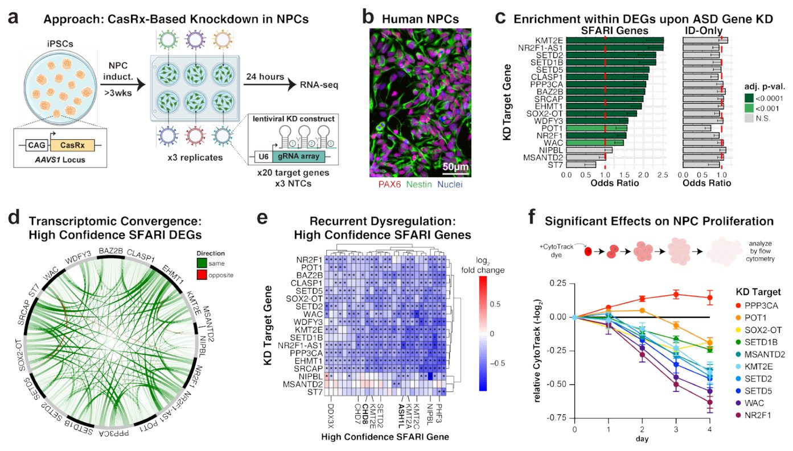
Суреттің толық сипаттамасы
1-сурет./ РАС гендерінің сарқылуы кең таралған транскриптомдық конвергенцияны көрсетеді. a, Экспериментальды дизайнның схемасы. iPSCs: индуцияланған плюрипотентті дің жасушалары. b, Үш тәуелсіз талдаудың ұқсас нәтижелерін көрсететін iPSC туынды NPC культураларының иммуноцитохимиясы. c, Мақсатlı геннің өзін қоспағанда, әрбір KD жағдайының DEG құрамындағы SFARI гендерінің немесе тек ID гендерінің байытылуын көрсететін бағанды диаграмма. Бағандар бір жақты Фишердің дәл тестінен алынған мүмкіндіктер қатынасын (OR) көрсетеді; қателік сызықтары OR үшін 95% сенім аралығының төменгі шекарасын көрсетеді (бір жақты тест үшін жоғарғы шекара анықталмаған). p-мәндері көптік гипотезаны тексеру үшін Бенджамини-Хохберг түзеуі арқылы түзетілді. d, Әртүрлі KD жағдайлары арасында ортақ жоғары сенімді SFARI DEG көрсететін Циркос диаграммасы (сондай-ақ Кеңейтілген деректердің 3a-суретін қараңыз). e, Кем дегенде 10 KD жағдайында DEG болып табылатын жоғары сенімді SFARI гендерінің салыстырмалы экспрессиясын көрсететін жылу картасы (сондай-ақ Кеңейтілген деректердің 3b-c суреттерін қараңыз). Статистикалық тұрғыдан маңызды DEG көптік гипотезаны тексеру үшін Бенджамини-Хохберг түзеуі бар DESeq2 (Уольд тесті) көмегімен анықталды және * белгісімен көрсетілген. 1-ден жоғары РАС қауіпті гендері қою қаріппен жазылған. f, Уақыт өте келе салыстырмалы CytoTrack бояғыш қарқындылығы (-log2). Уақыт өте тұрақты статистикалық маңызды әсерлерді көрсеткен тек KD жағдайлары көрсетілген. График орташа мән +/- орташаның стандартты қателігін (SEM) көрсетеді. Статистикалық маңыздылық Даннетттің көптік салыстыру тестімен қалыпты екі факторлы дисперсиялық талдау (ANOVA) арқылы анықталды. Әрбір уақыт нүктесі үшін әр жағдайға кемінде үш биологиялық тәуелсіз үлгі талданды. Толық статистикалық нәтижелер үшін 10-қосымша кестені қараңыз.
Аутизм спектрінің бұзылуы ұлдарда қыздарга қарағанда үш-төрт есе жиі кездеседі, бірақ бұл жағдайдың гендік себептері толық түсініксіз еді. Жаңа жұмыс авторлары жыныстық хромосомалар мен арнайы ақуыздар генетикалық ақауларды өтей алатынын көрсетті. Бұл зерттеу әйелдердің қорғаныш әсерінің табиғатын молекулалық деңгейде түсіндіреді. Нәтижелер нейродаму процестерін жаңа қырынан тануға жол ашады.
Басты ойлар
- 18 аутизм генін тежеу жасушаларда ортақ ақау туындатады.
- ZFX факторы әйелдерде екі X хромосомадан да белсенді бөлінеді.
- ZFX ақуызының жоғары деңгейі миды гендік мутациялардан қорғайды.
Толығырақ
Аутизм жүздеген гендердің мутациясымен байланысты, алайда ДНҚ-ның әр түрлі учаскелерінің зақымдануы неліктен ұқсас белгілерге әкелетіні жұмбақ болып келді. Осыны анықтау үшін зерттеушілер адамның жүйке арғы тектік жасушаларында аутизмге қатысты 18 негізгі геннің белсенділігін төмендетті. Кез келген осындай генді ажырату басқа аутизм гендерінің жұмысының жаппай төмендеуіне әкелетіні анықталды. Бұл әртүрлі бастапқы бұзылулардың бірыңғай реттеуші желіде ортақ істен шығуға әкелетінін көрсетеді.
Гендік желілерді талдау X хромосомасында орналасқан және әйелдерде екі хромосомада да белсенді ZFX транскрипция факторын көрсетті. Әйелдер бұл фактордың екі еселік мөлшерін алатындықтан, ол зақымдалған гендердің жұмысын тиімдірек қолдайды. Авторлар әйел миындағы ZFX ақуызының жоғары деңгейі генетикалық мутацияларды буферлеуде маңызды рөл атқаратынын болжайды. Бұл қыздарда аутизмнің көрінуі үшін ұлдарға қарағанда көбірек генетикалық қатер жиналуы керектігін түсіндіреді.
Шектеулер
Зерттеу адам жасушаларының культурасында in vitro жүргізілгендіктен, тірі организмдерде тексеруді талап етеді.
Мақаланың толық аудармасы
Түйіндеме
Аутизм спектрінің бұзылуы (АСБ) жоғары дәрежеде тұқым қуалайды және жүздеген гендердің мутациялары АСБ-ның жеке сирек себептері ретінде анықталған. Бұл функционалды түрлі гендердің бұзылуы АСБ-ның негізгі белгілеріне қалай әкелетінін түсіну күрделі міндет болып қала береді. Сонымен қатар, АСБ ер адамдарда әйелдерге қарағанда үш-төрт есе жиі кездеседі, ал аутизмі бар қыздар ұлдармен салыстырғанда АСБ-ның аутосомды қауіп аллельдерін көбірек тасымалдайды, бірақ бұл «әйелдерді қорғайтын әсердің» (female protective effect, FPE) биологиялық негізі белгісіз. Бұл зерттеуде біз адамның нейрондық ізашар жасушаларындағы 18 АСБ генінің жеке бұзылулары ген экспрессиясына ортақ әсерлерге, соның ішінде басқа АСБ гендерінің кең көлемде төмендеуіне (downregulation) әкелетінін көрсетеміз. Гендік реттеуші желінің (GRN) de novo реконструкциясы орталық транскрипция реттеушілерін, соның ішінде көрнекті АСБ гені CHD8, сондай-ақ бұл транскрипциялық конвергенцияға түрткі болатын REST сияқты жаңа кандидаттарды анықтауға мүмкіндік берді. Сонымен қатар, әйелдерде белсенді де, инактивті де X-хромосомалардан экспрессияланатын X-байланысқан транскрипция факторы ZFX көптеген АСБ гендерінің негізгі активаторы ретінде пайда болды: біз әйелдер миында байқалатын жоғары ZFX экспрессия деңгейі әртүрлі АСБ гендеріндегі зақымдаушы мутацияларды буферлей алады деп болжаймыз, бұл FPE-ге ықпал етеді. Біріктіріп қарағанда, бұл нәтижелер негізгі GRN-дердің жеке АСБ гендері бұзылған кезде қалай кең және ұқсас түрде дисрегуляцияға ұшырайтынын ашады және АСБ-дағы әйелдерді қорғайтын әсер туралы молекулалық түсінік береді.
Маңызды
Нейрондық жасушаларда 18 АСБ генінің бұзылуы ортақ транскрипциялық жауапқа әкеледі, ал екі X-хромосомадан экспрессияланатын ZFX факторы негізгі қорғаныш активаторы ретінде әрекет етеді.
Көлемді генетикалық зерттеулер жүздеген гендерді аутизм спектрінің бұзылуымен (АСБ) байланыстырды, олардың көбі бір аллель функциясының жоғалуына әкелетін сирек мутациялар арқылы анықталған. Бұл ген дозасының АСБ-да маңызды рөл атқаратынын көрсетеді, сондықтан АСБ гендерінің тиісті экспрессия деңгейлерінің қалай сақталатынын анықтау өте маңызды. Гендік реттеуші желілерді (GRN) сипаттау осы АСБ гендерінің дұрыс транскрипциялық дозасын қамтамасыз ететін механизмдер туралы маңызды мәліметтер бере алады. Сонымен қатар, АСБ таралуында ер адамдардың үлесі айтарлықтай жоғары, және кейбір АСБ гендері X-хромосомада анықталғанымен, тек X-байланысқан мутациялардың өзі бұл жыныстық теңгерімсіздікті толық түсіндіре алмайды. Бұдан басқа, ер адамдармен салыстырғанда әйелдерге АСБ көрінуі үшін көбірек аутосомды генетикалық қауіп қажет екендігі дәйекті түрде көрсетілді, бірақ бұл әйелдерді қорғайтын әсердің (FPE) генетикалық механизмдері белгісіз. Мұнда GRN реконструкциясы CHD8 пен REST қоса алғанда, АСБ гендері экспрессиясының негізгі қозғаушы күштерін анықтайды. Бұл талдаулар сонымен қатар әйелдерде белсенді және инертті X-хромосомадан экспрессияланатын, әйелдер жынысына қарай ауытқуы бар ZFX транскрипция факторын АСБ гендерінің негізгі реттеушісі ретінде ашады, бұл FPE-ге ықпал ете алатын тікелей транскрипциялық механизмді болжайды. Бұл зерттеу әртүрлі гендердегі нұсқалардың ақырында АСБ-ға әкелетін конвергентті молекулалық әсерлерді қалай тудыратынын анықтау үшін маңызды негіз береді.
Түсіндірме
Гендік реттеуші желі (GRN) — бұл жасушада гендердің қосылуы мен өшуін басқаратын ДНҚ, РНҚ және ақуыздар арасындағы өзара әрекеттесудің күрделі жүйесі.
Нәтижелер
ASD гендерінің сарқылуы кең таралған транскриптомдық конвергенцияны көрсетеді
Аутизм спектрінің бұзылулары (АСБ) гендерін функционалдық зерттеу адамның нейрондық предшественник клеткаларында (NPC) төменгі мишеньдерге күшті қабаттасатын әсерлерін анықтады. Нокдаун (KD) зерттеулері Simons Foundation Autism Research Initiative (SFARI) Gene деректер базасынан 18 генді және бұрын АСБ-мен байланыстырылған екі ұзын кодталмайтын РНҚ-ны (lncRNA) (NR2F1-AS1 және SOX2-OT) қоса алғанда, 20 АСБ гені үшін жүргізілді. Салауатты ер адамның (XY) индукцияланған плюрипотентті дің жасушалары (iPSC) сызығынан алынған NPC культураларында нысанасыз бақылауларға (NTC) қатысты әрбір мақсатты геннің жеке нокдаунын индукциялау үшін РНҚ-ны ыдырататын CRISPR ферменті CasRx және әрбір нысанаға үш гидті РНҚ (gRNA) жиынтығы (S1-кесте) пайдаланылды (1a-b-сурет және S1-сурет). KD-дан кейін 24 сағат өткен соң жүргізілген РНҚ секвенирлеу (RNA-seq) талдауы барлық дерлік әсерлер айтарлықтай дифференциалды экспрессияланатын гендердің (DEG; түзетілген p < 0,05) едәуір санына әкелгенін көрсетті, әрбір әсер үшін медиана 920 DEG құрады (25-перцентиль: 644, 75-перцентиль: 1485) (S2-сурет және S2-кесте).
Маңызды
20 АСБ генінің нейрондық предшественниктердегі нокдауны экспрессияның ауқымды өзгерістерін тудырды (ген үшін медиана 920 DEG).
Осы DEG-терді кейінгі талдау үшін жеткілікті статистикалық қуатты қамтамасыз ету үшін біз 20-дан 18 әсерге (18/20, 90%) назар аудардық, олар 20-дан астам DEG-тің пайда болуына әкелді, ал ARHGAP5 және ARID2 нокдаун үлгілерін кейінгі талдаудан шығардық. Қалған әсерлер әрқайсысы кем дегенде 287 DEG пайда болуына әкелді, бұл бұл үлгілерді сенімді түрде сипаттауға мүмкіндік берді. Транскриптомдық масштабтағы талдаулар АСБ гендерінің KD басқа АСБ гендерінің таңқаларлық ауқымды бұзылуын тудыратынын көрс жинады. DEG жиынтықтарының көпшілігі SFARI гендер базасындағы белгілі АСБ гендерінің айтарлықтай байытылуын көрсетті (15/18, 83.3%) (1c-сурет және S3-кесте). Керісінше, зияткерлік кемтарлықпен (ID), бірақ АСБ-мен байланысты емес гендер үшін айтарлықтай байытылу байқалмады (тек ID гендері) (1c-сурет және S3-кесте) (Әдістер), олардың NPC-тегі салыстырмалы экспрессиясына қарамастан (тек ID гендері: 1062/1242, 85.5% экспрессияланған; SFARI гендері: 797/1230, 64.8% экспрессияланған). Бұл АСБ гендерінің бұзылуы нейрорефлекторлық гендерге қарағанда, әсіресе басқа АСБ гендеріне әсер ететінін көрсетеді.
Түсіндірме
Нокдаун (KD) — бұл генамин функцияларын бағалау үшін РНҚ-интерференция немесе CRISPR жүйелері арқылы нақты ген экспрессиясын төмендету әдісі.
Атап айтқанда, біз түрлі әсерлер арасындағы транскриптомдық конвергенцияның таңқаларлық заңдылығын байқадық, мұны біз бірдей DEG-тердің статистикалық маңызды қабаттасуы ретінде анықтаймыз (S3-сурет). Бұл әсіресе жоғары сенімді SFARI (HC-SFARI) гендері үшін, яғни АСБ-мен байланысты ең жоғары дәлелдемелік санаттағы SFARI гендері үшін айқын болды (1d-сурет). Сонымен қатар, HC-SFARI гендері белгілі бір KD үлгісінде маңызды DEG болмаса да, әр түрлі әсерлердің нәтижесінде үйлесімді бағытта ауысуға бейім болды (S3c-сурет). Бұған көптеген (11/18, 61.1%) KD арқылы айтарлықтай төмендетілген маңызды АСБ қауіп гені CHD8 кірді. Айта кету керек, барлығы 27 HC-SFARI гені кем дегенде 10 KD-да DEG болды (27/183, 14.8%, p = 4.1e-9) және олардың барлығы дәйекті түрде төмендетілді (1e-сурет), бұл АСБ-ның ең күшті қауіп гендерінің көпшілігінің конвергентті дисрегуляциясын көрсетеді.
Абайлаңыз
Бұл зерттеу in vitro жағдайында өсірілген адам жасушаларында орындалды, сондықтан себеп-салдарлық байланыстарды растау үшін тірі организм модельдері қажет.
CasRx-тің жоғары деңгейлері KD мишенінің экспрессия деңгейіне сәйкес келетін көлемдегі арнайы емес РНҚ деградациясын тудыратыны хабарланды, ал төменгі CasRx деңгейлері бұл мәселені болдырмайды. Біздің NPC транскриптомдық зерттеулерімізде CasRx тек бір қауіпсіз локустан (AAVS1) экспрессияланды, бұл оның экспрессиясын шектеді. Сондай-ақ біз арнайы емес РНҚ деградациясы біздің нәтижелерімізге әсер етпегенін растау үшін бірнеше қосымша эксперименттер жүргіздік. Біріншіден, біз бүкіл транскриптомды (p = 0.990, R2 = 8e-6, сызықтық регрессия) немесе нақты SFARI гендерін (p = 0.784, R2 = 0.0043, сызықтық регрессия) қарастырған кезде KD мишеньдерінің экспрессия деңгейлері мен нәтижелі DEG саны арасында ешқандай байланыс таппадық (S4a-сурет). Содан кейін біз mKO2, mScarlet және iRFP670 флуорофорларын экспрессиялайтын NPC жасадық және олардың әрқайсысын CasRx-пен жеке нысанаға бағыттадық (S4-кесте); ағынды цитометрия нысанасыз флуорофорлардың флуоресценция қарқындылығына қосымша әсерлерін көрсетпеді (S4b-сурет және S5-кесте). Соңында, біз NPC-те қысқа шаш тәрізді РНҚ-ларды (shRNAs) пайдаланып нысаналы гендеріміздің ішкі жиынтығына қосымша KD зерттеулерін жүргізгеннен кейін ортақ төмендетілген DEG-тердегі күшті транскриптомдық конвергенцияны растадық (S4c-d-сурет, S5-сурет және S6-кесте).
Сондай-ақ iPSC-терде және iPSC-тен алынған қоздырғыш нейрондарда (ExNs) АСБ гендерін нокаут жасау үшін Cas9 қолданған зерттеу деректерін қайта талдау жасуша түрі ішінде де, жасуша түрлері арасында да ортақ төмендетілген DEG-терде күшті транскриптомдық конвергенцияны көрсетті (S5-сурет және S6-кесте). Біздің жұмысымыз ұсынылғаннан кейін пайда болған соңғы зерттеулер әр түрлі АСБ модельдерінде де конвергенцияны атап өтті. Біріктірілген бұл деректер АСБ гендерінің бұзылуы әр түрлі жасуша түрлері мен эксперименталды контексттерде транскриптомдық конвергенцияға әкелетінін растайды.
Транскриптомдық конвергенция РАС қатерлі кандидат гендерін анықтайды.
Біздің KD зерттеулерімізде байқалған айқын транскриптомдық конвергенция РАС қатерлі кандидат гендерін мына белгілер бойынша бөліп көрсетуге болатынын көрсетті: 1) РАС гендерінің KD-дан кейінгі тұрақты төмендеуі және 2) жоғары гендік шектеу ұпайлары көрсеткендей, дозаға сезімталдық (SN қосымша кестесі, Әдістер). Бұл тәсіл 397 генді (SN қосымша кестесі), соның ішінде 113 SFARI генін (OR = 5,87, түзетілген p = 1,85e-39) және 49 HC-SFARI генін (OR = 11,17, түзетілген p = 1,11e-29) анықтауға мүмкіндік берді, бұл осы критерийлердің белгілі РАС гендеріне басымдық беруде тиімді екенін көрсетеді.
Маңызды
> Транскриптомдық конвергенция мен гендік шектеулерді біріктіру тек ақыл-ой кемістігі гендерімен байытылмаған түрде 397 РАС кандидат генін, соның ішінде 162 SFARI генін бөліп көрсетті.
Айта кету керек, бұл гендер жиынтығы тек ақыл-ой кемістігімен байланысты гендердің байытылуын көрсетпеді (OR = 1,01, түзетілген p = 0,509). Қалған 284 SFARI емес гендердің РАС үшін маңыздылығын растай отырып, олардың барлығы SFARI гендерімен айтарлықтай бірлескен экспрессияны көрсетеді (барлық түзетілген p < 0,05), бұл бұрын жаңа РАС қатерлі гендерін анықтауға көмектесетіні көрсетілген. Сонымен қатар, бұл гендердің кем дегенде қырығы бір немесе бірнеше ірі секвенирлеу зерттеулерінде РАС-пен белгілі бір байланысты көрсетеді (SN қосымша кестесі). Мысалы, AKT3 мутациялары классикалық түрде мегаленцефалия сияқты мидың шамадан тыс өсу бұзылыстарымен байланысты болғанымен, жуырда РАС-пен байланыстырылды; KIF11, KIF2A және SOS1 сияқты басқа гендер де бірнеше зерттеулерде РАС-пен байланыстырылған (SN қосымша кестесіндегі сілтемелерді қараңыз). Демек, қалған гендер РАС қатерлі кандидат гендері ретінде қарастырылуға лайық.
РАС гендері NPC пролиферациясын реттейді.
Көптеген РАС гендерінің бұзылулары NPC-терде де ұқсас фенотиптік әсерлер тудырды. Тұқым қуалайтын бояғыш (CytoTrack) көмегімен пролиферацияны талдау KD-лардың 9/18 (50%) пролиферацияның статистикалық маңызды төмендеуіне әкелгенін көрсетті (1f суреті, Extended Data 6 суреті және SN қосымша кестесі), соның ішінде микроцефалияға қатысы бар бірнеше гендер (SETD1B, SETD2, SETD5, KMT2E және WAC). Керісінше, KD-лардың тек 1/18 (5,6%) NPC пролиферация жылдамдығының айтарлықтай өсуіне әкелді.
Түсіндірме
> Пролиферация — бұл жасушалардың белсенді бөліну және көбею процесі, бұл жағдайда нерв ізашарларының денсаулығы мен өсуін бағалау үшін арнайы таңбалау көмегімен өлшенді.
Бұл төмендеген NPC пролиферациясы әртүрлі РАС гендерінің бұзылуы нәтижесінде пайда болатын жалпы фенотип екенін болжайды, бұл бұрынғы нәтижелермен үйлеседі. Осы молекулярлық фенотиптер мен РАС кезіндегі бастың қалыптан тыс өлшемі арасындағы нақты байланыстарды шешу күрделі, өйткені есептер аутизмі бар адамдарда микроцефалия да, макроцефалия да жиілігінің жоғарылайтынын көрсетеді. Шынында да, біз NPC-терде пролиферацияны төмендететінін анықтаған екі KD нысаны — SETD2 және KMT2E — осы гендерде зерттелген нақты варианттарға байланысты микроцефалиямен де, макроцефалиямен де байланысты болды.
Абайлаңыз
> Бақыланған пролиферация өзгерістері in vitro жасушалық модельдерінен алынды және олардың адам басының өлшеміне ауысу механизмі әлі де түпкілікті анықталуы тиіс.
Осылайша, NPC пролиферациясының бұзылуы біздің көптеген бұзылуларымызда байқалатын конвергентті фенотип болғанымен, бұл бас өлшемінің кейінгі өзгерістерімен қалай байланысты екені әлі де анықталуы керек.
Аутизм гендерінің бұзылуы ми органоидтарының дамуын өзгертеді
Ми органоидтарындағы индуцибелді нокаут (KD) ортақ нейроонтогенетикалық фенотиптерді ашты. Осы органоидтық зерттеулерді жүзеге асыру үшін біз FLEx негізіндегі индуцибелді CRISPR нокаут (FLICK) құрылымын жасадық. FLICK жүйесі CasRx және EGFP репортерінің конститутивті экспрессиясына әкелетін доксициклинмен индуцибелді генетикалық рекомбинация арқылы KD уақытын басқаруға мүмкіндік береді (2a-сурет) және сенімді KD қамтамасыз етеді (7a-Қосымша мәлімет суреті). FLICK құрылымдары, сонымен қатар, бір жасушалы РНК секвенирлеуі (scRNA-seq) кезінде ұсталып алынатын және белгілі бір жасушадағы KD нысанын анықтау үшін қолданылатын маркерлік тізбектерді қамтиды, бұл мозаикалық ми органоидтарын талдауға мүмкіндік береді. Ұзақ мерзімді зерттеулер үшін біз CytoTrack тәжірибелерімізде NPC пролиферациясын бұзмағаны анықталған ASD гендерін таңдадық (10-Қосымша кесте). Осы гендерге бағытталған немесе NTC gRNA экспрессиялайтын FLICK құрылымдары жеке-жеке идуцирленген плюрипотентті дің жасушаларына (iPSC) тасымалданды. Содан кейін біз флуоресцентті репортер TagBFP экспрессиясына негізделген FLICK құрылымдарын біріктірген жасушаларды бөліп алу үшін флуоресценциямен белсендірілетін жасушаларды сұрыптауды (FACS) қолдандық. FACS кейін біз мозаикалық органоидтарды жасауға дейін қалпына келуі үшін бұл аралас iPSC популяциясын төрт күн бойы өсірдік (0-күн), әрбір KD нысаны үшін тең мөлшердегі FLICK+ iPSC мен бірдей мөлшердегі NTC iPSC біріктірдік. CasRx және EGFP репортерінің конститутивті экспрессиясына әкелетін FLICK құрылымының рекомбинациясы органоидтар негізінен PAX6+ NPC тұрған 14-15-күндерден бастап доксициклинмен өңдеу арқылы жасушалардың бір бөлігінде (~10%) индуцияланды (7b-Қосымша мәлімет суреті). Кейіннен бұл органоидтар бір немесе екі айлық даму кезеңіне дейін өсіріліп (2b-сурет), радиалды глиальды прогениторларды (RGs), аралық прогениторлық жасушаларды (IPCs), тежеуші нейрондарды (INs) және қоздырғыш нейрондарды (ExNs) қоса алғанда, барлық күтілетін жасуша түрлерін анықтаған scRNA-seq көмегімен талданды (2c-d-суреттер және 7c-d-Қосымша мәлімет суреті). Қосымша scRNA-seq талдауы FLICK құрылымы тиімді KD өндіре алатынын тағы да растады (7e-Қосымша мәлімет суреті).
Маңызды
BAZ2B, CLASP1 және EHMT1 аутизм гендерінің нокауты органоидтардағы жасушалардың азаюына және радиалды глия есебінен қоздырғыш нейрондар бағытында дифференцировканың өзгеруіне әкелді (p = 0.021, 0.018 және 0.012).
Ұзақ мерзімді органоидтық KD бірнеше өзгерістер бойынша ортақ фенотиптерді көрсетті. Бірнеше KD, әсіресе BAZ2B, CLASP1 және EHMT1 бағытталғандары, NTC-мен салыстырғанда органоидтарда азайды (2e-сурет), алайда бұл KD NPC культураларында пролиферацияны бұзған жоқ (6a-Қосымша мәлімет суреті және 10-Қосымша кесте). Біздің NPC культуралары мен органоидтар арасындағы бұл сәйкессіздік прогениторлардың пролиферациясын да, дифференцировкасын да қолдайтын ұзақ мерзімді органоидтар қыզқаммерзімді NPC культураларында байқалмайтын нейроонтогенетикалық фенотиптерді көрсете алатынын болжайды. Бір қызығы, микроцефалия бұл гендердегі патогендік варианттармен байланысты, бұл органоидтық фенотиптерге сәйкес келеді. Сонымен қатар, бұл KD органоидтардағы жасуша түрлерінің арақатынасын өзгертіп, салыстырмалы түрде көбірек ExN және азырақ RG түзді (BAZ2B үшін adj. p = 0.021, CLASP1 үшін 0.018 және EHMT1 үшін 0.012, Даннеттің көптік салыстыру тесті бар бір факторлы дисперсиялық анализ ANOVA) (2f-сурет және 7f-Қосымша мәлімет суреті). Бұл бірлесіп осы гендердің бұзылуы RG өзін-өзі қалпына келтіруі есебінен ExN дифференцировкасының артуына әкелуі мүмкін екенін болжайды. Басқа KD көпшілігі де 2 айлық мерзімге қарай ExN үлесінің артуына бейім болды, бұл бұрынғы бақылауларға сәйкес келетін конвергентті нейроонтогенетикалық фенотип екенін көрсетеді.
Түсіндірме
scRNA-seq (бір жасушалы РНК секвенирлеуі) мыңдаған жеке жасушалардың экспрессия профилін егжей-тегжейлі зерттеуге мүмкіндік береді, ал органоидтар зертханада өсірілген үш өлшемді ми үлгілері болып табылады.
ASD гендерінің азаюы, сонымен қатар, ми органоидтарында айқын транскрипциялық конвергенцияға әкелді (3a-сурет және 7g-Қосымша мәлімет суреті). Әр түрлі KD бар RG өте ұқсас дифференциалды экспрессияланатын гендерді (DEG) көрсетті, бұл NPC культураларынан алған нәтижелерімізді тағы да растайды. Шын мәнінде, органоидтық RG анықталған DEG NPC культураларындағы сол нысанның KD анықталған DEG-мен күшті түрде сәйкес келді (7h-Қосымша мәлімет суреті), бұл ген экспрессиясына әсер ететін бұл әсерлердің белгілі бір эксперименталдық контекстке тән емес екенін болжайды. Транскрипциялық конвергенция сонымен қатар IPC пен ExN қоса алғанда, қосымша жасуша түрлерінде байқалды (3a-сурет және 7g-Қосымша мәлімет суреті), бұл ASD гендерінің ортақ төменгі ағынды әсерлер бойынша конвергенциясы тек нейрондық прогениторларға ғана тән емес екенін дәлелдейді. Бұл ASD әр түрлі себептері бар адамдардың қайтыс болғаннан кейінгі ми тінінде ортақ ASD DEG анықтаған зерттеулермен, сондай-ақ әр түрлі ASD гендері бұзылған кезде синапстық құрылым немесе белсенділік сияқты ExN конвергентті фенотиптерінің кең тараған бақылауларымен сәйкес келеді, бұл конвергенция жасуша түрінің немесе прогениторлық жасушалар тағдырының жай ғана ортақ өзгеруін көрсетпейтінін білдіреді. Сонымен қатар, біз scRNA-seq көмегімен сәйкес келетін DEG анықтау әрбір өзгеріс үшін секвенирленген жасушалар санына қатты тәуелді екенін анықтадық, мұны іріктемелік талдау көрсетеді (3b-сурет). Іріктеме көлеміне бұл тәуелділік кішірек іріктеме көлемдері бар кейбір бұрынғы зерттеулерде жеке ген деңгейінде байқалған сенімді транскрипциялық конвергенцияның болмауын ішінара түсіндіруі мүмкін. Біздің изогендік фонды пайдалануымыз транскрипциялық конвергенцияны анықтауымызға ықпал еткен болуы мүмкін, өйткені әр түрлі генетикалық фонда органоидтардағы ASD гентерінің бұзылуынан туындайтын нейроонтогенетикалық фенотиптерге айтарлықтай әсер ететіні анықталған. Соңында, кейбір конвергентті түрде бұзылған гендер жасуша түріне тән болғанымен, көптеген гендер SFARI DEG қоса алғанда, бірнеше жасуша түрлерінде тұрақты түрде бұзылды (3c-сурет). Бұл жасуша түріне тән ерекшеліктер ASD гендерінің бұзылуының транскрипциялық салдарына әсер етсе де, белгілі бір әсерлер әр түрлі жасуша түрлерімен кеңінен бөлісуі мүмкін екенін болжайды.
Ми органоидтеріндегі өткен жіті бұзылулардан кейінгі транскриптомдық конвергенция
2 айлық органоидтердегі аутизм (ASD) гендерінің өткен жіті бұзылуы ортақ дифференциалды экспрессияланатын гендер (DEG) бойынша тіпті үлкен конвергенцияны анықтады. Қалыпты дамыған органоидтер ішінде осы гендердің бұзылуының жедел әсерлерін анықтауға мүмкіндік беру үшін, 61-62-ші күндерден бастап доксициклинмен өңдеу арқылы KD (нокдаун) индукцияланғанға дейін екі ай бойы қосымша мозаикалық FLICK органоидтері өсіріліп, екі күннен кейін scRNA-seq орындалды. Бұл тәсіл әрбір KD үшін ұқсас жасуша санын қамтамасыз етті (3d сурет және SN 7i суреті), бұл ұзақ мерзімді KD кезінде органоидтерден сарқылған KD-лерді тереңірек талдауға мүмкіндік берді (2e сурет). Күтілгендей, бұл органоидтер жасуша түрлерінің қоспасын қамтыды (3e сурет және SN 7j суреті), мұнда қоздырушы нейрондар (ExN) осы даму кезеңінде ең көп таралған жасуша түрі болды (SN 7k суреті). Бір қызығы, көптеген KD-лер NPC (жүйке жасушаларының арғытектері) культураларынан анықталған DEG-термен байытылған ExN DEG-теріне әкелді (SN 7l суреті), бұл ASD гендерінің KD кезінде әртүрлі жасуша түрлері бойынша ген экспрессиясының ортақ өзгерістерін тағы да көрсетеді. Сонымен қатар, ұзақ мерзімді KD барысында органоидтерден сарқылған нысана гендердің жіті KD жасалуы (2e сурет) бұл әсерлер үшін әлдеқайда көп жасуша санын алуға мүмкіндік берді, бұл KD-лердің де күшті транскриптомдық конвергенцияға әкелетінін көрсетті (3f сурет).
Маңызды
Органоидтердегі ASD гендерінің жедел нокдауны айқын транскриптомдық конвергенцияны растайды және қоздырушы нейрондар сияқты негізгі жасуша түрлеріне әсер етеді.
REST-ті қоса алғанда, негізгі транскрипция факторлары қайтадан дисрегуляцияланған гендерге бағытталған. Транскрипциялық
реттеушілер, ASD-де транскрипциялық конвергенцияны қамтамасыз ете алатындар, ENCODE деректер базасынан хроматин иммунопреципитациясын секвенирлеу (ChIP-seq) деректерін пайдаланатын MAGIC талдауы (Әдістер) арқылы анықталды, ол қызығушылық тудыратын гендер жиынтығында байланысу нысаналары байытылған транскрипция факторлары мен кофакторларды анықтайды. Бұл NPC-тердегі ASD гендерінің көптеген KD-лері бойынша нысана гендері қайталанатын дифференциалды түрде экспрессияланған транскрипциялық реттеушілерді анықтады (SN 8a суреті және SN 11 кестесі), соның ішінде CHD2 және SIN3A сияқты жоғары сенімді SFARI (HC-SFARI) гендері. Бұрын ASD-мен байланысты емес қайталанатын MAGIC реттеушілерінің арасында бірнешеуі жоғары консервативті (SN 7 кестесі) және белгілі ASD гендерімен бірге экспрессияланатын (SN 8a суреті) болды — бұл қасиеттер жаңа ASD қауіп гендерін болжауға болатынын көрсетті4. MAGIC талдауы органоидтердегі конвергенцияның тұрақты драйверлерін де анықтады (SN 8a суреті және SN 11 кестесі). NPC-терде анықталған ең жақсы қайталанатын транскрипциялық реттеушілердің жартысы (13/26, 50%) органоидтік RG-лерде де анықталды (SN 8b суреті). MAGIC сондай-ақ даму кезеңдері бойынша және ұзақ мерзімді және жіті KD уақыт шкалалары бойынша ортақ ExN реттеушілерін, соның ішінде көптеген SFARI гендерін анықтады. Бір қызығы, бұл гендердің тоғызы нейрондық арғытектерде де ең жоғары транскрипциялық реттеушілер ретінде анықталды, бұл олардың бірнеше жасушалық контексттердегі конвергенцияның негізгі драйверлері екенін көрсетеді. Атап айтқанда, RE1 тыныштандырушы транскрипция факторы (REST) NPC зерттеулерінің 17/18 (94.4%) жағдайында MAGIC бойынша елеулі болды (SN 8a суреті) және барлық сыналған жағдайларда ең жақсы MAGIC реттеушісі ретінде тұрақты түрде пайда болды (SN 8b суреті). REST-тің тікелей мутациялары бұрын ASD-мен байланысты болмағанымен, REST нейрогенезде маңызды рөл атқарады және нейрогенездің басты негативті реттеушісі ретінде жұмыс істейді40,41. REST дисрегуляциясы ASD гендерінің бұзылуынан кейін де хабарланған, мысалы, CHD842 және Ретт синдромының гені MECP243,44. Адам және тышқан REST ChIP-seq байланысу сайттарын қайта талдау (Әдістер) REST нысаналары арасында SFARI гендерінің күшті байытылуын анықтады (сәйкесінше adj. p = 3.6e-67 және 7.7e-50), соның ішінде HC-SFARI гендері (сәйкесінше adj. p = 2.2e-13 және 3.7e-8), бұл ASD-ге қатысты гендер экспрессиясын реттеудегі REST-тің маңызды рөлін растайды.
Түсіндірме
ChIP-seq әдісі геном бойынша ақуыздардың ДНҚ-мен байланысу орындарын картаға түсіруге мүмкіндік береді, ал MAGIC талдауы гендер жиынтығы үшін ортақ реттеуші желілерді анықтайды.
Гендік реттеуші желінің реконструкциясы жоғары өзара байланысқан ASD гендерін көрсетеді
ARACNe көмегімен NPC RNA-seq деректерімізден de novo GRN реконструкциясы қосымша транскрипция факторлары мен хроматин модификаторларын — бірге «реттеушілер» деп аталады — олардың төменгі ағындағы нысаналарымен (регулондармен) байланыстыруға мүмкіндік берді (Әдістер). Біз бұл тәсілді регулондарды болжауда айналмалы қателіктерді болдырмау үшін KD нысанының өзі әлеуетті реттеуші болып табылатын үлгілердегі деректерді алып тастайтын «ұстап қалынған» (held-out) GRN-дерді бөлек құру арқылы растадық. Осы сақталған GRN-дерден болжанған регулондар NPC-тегі сәйкес нысана гендердің KD жасалуынан кейін байқалған DEG-термен күшті түрде қиылысты (әрқайсысы үшін adj. p < 3.98e-116, біріктірілген p = 4.08e-937) (4a суреті және SN 9a суреті). Осылайша, ARACNe шынайы реттеуші қатынастарды тиімді түрде қамтиды. Толық NPC GRN ASD гендері мен олардың жоғарғы ағындағы реттеушілері арасындағы жоғары өзара байланыс дәрежесін көрсетті (4b суреті). Шын мәнінде, ASD гендері NPC GRN орталық гендері арасында күшті байытылған болатын (SFARI гендері үшін adj. p = 9.81e-6, HC-SFARI гендері үшін 1.99e-4, орталықтылық PageRank алгоритмі арқылы бағаланды, Әдістер) (4c суреті). Керісінше, тек ақыл-ой кемістігіне ғана қатысты гендер (ID-only) GRN орталық гендері арасында байытылуды көрсетпеді (adj. p = 0.19), бұл ASD гендерінің KD-лері нәтижесінде пайда болған DEG-тер арасында байқалмаған байытылуға сәйкес келеді (1c суреті). Сонымен қатар, орталық GRN гендері G2M бақылау нүктесімен (adj. p = 6.0e-4) және митоздық ұршықпен (adj. p = 3.6e-5) байланысты жолдар үшін байытылған, бұл біз байқаған NPC пролиферация фенотиптеріне сәйкес келеді (1f суреті және SN 10 кестесі).
GRN талдауы CHD8 генін АСБ-дағы конвергенцияның негізгі драйвері ретінде анықтайды
Біз содан кейін АСБ-мен байланысты транскриптомдық конвергенцияның негізгі драйверлері ретінде әрекет ететін GRN реттеушілерін анықтадық. Бұл талдау АСБ генінің KD әсерінен белсенділігі тұрақты түрде өзгерген және нысандары SFARI гендерімен байытылған, сондай-ақ GRN орталығында орналасқан конвергенцияның 70 негізгі драйверін ашты (S12-кесте). Осы негізгі конвергенция драйверлерінің жартысына жуығы SFARI гендері болып табылады (31/70, ОШ = 6,35, түз. p = 3,9e-11), ал үштен біріне жуығы жоғары сенімді HC-SFARI гендері (22/70, ОШ = 10,61, түз. p = 6,7e-12). Керісінше, бұл конвергенция драйверлерінің тек жетеуі ғана ақыл-ой кемістігіне ғана тән гендер болып табылады (7/70, ОШ = 2,06, түз. p = 0,078). Сонымен қатар, бұл негізгі конвергенция драйверлері АСБ гендерінің барлық дерлік KD кезінде тұрақты төмен реттелген (S9b-сурет). Олар сондай-ақ GRN ішінде (p < 1e-6) (4d-сурет), сондай-ақ STRING ақуыз-ақуыз өзара әрекеттесу деректер базасында (p = 2,0e-9) жоғары деңгейде өзара байланысқан (Әдістер).
Маңызды
GRN талдауы АСБ-дағы транскриптомдық конвергенцияның 70 негізгі драйверін анықтады, олардың арасында SFARI гендері басым болып, тығыз өзара байланыс пен ген KD кезінде үйлесімді төмендеуді көрсетеді.
Жиынтықтай келгенде, бұл бұл гендер АСБ көптеген гендерінің орталық реттеушілері ретінде әрекет етіп қана қоймай, сонымен бірге бір-бірін өзара реттейтінін, бұл АСБ-да транскриптомдық конвергенцияны тудыратынын көрсетеді. Итеративті walktrap кластерлеуі конвергенцияның 70 негізгі драйвері арасында төрт гендік модульді анықтады (4e-сурет), олардың біреуі (көк) әсіресе күшті өзара байланысқа ие болды. Бұл модуль STRING талдауы арқылы өте жоғары өзара әрекеттесуді көрсетті (p < 1e-16) және REST (S8-сурет) пен АСБ-ның белгілі ең күшті қауіп гендерінің бірі CHD8 қамтыды. Маңыздысы, GRN-нан болжанған CHD8 регулоны ChIP-seq арқылы бұрын анықталған тікелей CHD8 нысана гендері үшін күшті байытылған еді (1-дәрежелі регулон түз. p = 4,6e-7, 2-дәрежелі регулон түз. p = 3,9e-20) (4f-сурет), бұл ARACNe болжаған реттеуші байланыстардың дұрыстығын қосымша растайды.
Түсіндірме
ChIP-seq (хроматин иммунопреципитациясы және секвенирлеу) әдісі транскрипциялық факторлар сияқты ақуыздардың геномның қай бөліктерімен байланысатынын анықтауға мүмкіндік береді.
Сонымен қатар, бұрынғы есептерге сәйкес, CHD8 ChIP-seq нысаналары да NPC-те экспрессияланатын SFARI гендерімен (түз. p = 2,6e-8) және HC-SFARI гендерімен (түз. p = 8,5e-8) жоғары деңгейде байытылған. CHD8 бар модуль сонымен қатар біз тікелей өзгерткен үш транскрипциялық реттеушіні (SETD2, SETD5 және KMT2E) қамтыды, ал осы KD-дан шыққан дифференциалды экспрессияланатын гендер (DEG) CHD8 ChIP-seq нысаналары үшін елеулі байытуды көрсетті (сәйкесінше түз. p = 1,2e-5, 7,8e-8 және 2,6e-4) (4f-сурет), бұл маңызды АСБ гендерінің ортақ нысаналарды конвергентті реттеуін қосымша көрсетеді. Бұл талдау жоғары сенімді АСБ қауіп гені болып табылатын CHD8-ді АСБ-дағы транскриптомдық конвергенцияның негізгі драйвері ретінде көрсетеді.
Х-тіркелген транскрипциялық фактор ZFX — әйел жынысына қарай ауытқитын АСБ гендерінің реттеушісі
Бұрынғы зерттеулер АСБ кезінде төмен реттелген гендер нейротиптік әйелдердің миында еркектерге қарағанда жоғарырақ деңгейде экспрессиялануға бейім екенін көрсетті, бұл базалық әйел жынысына қарай ауытқитын экспрессия осы қорғаныш әсерге ықпал етуі мүмкін деген болжамды тудырады. Біз АСБ генінің KD әсерінен тұрақты түрде төмен реттелген және мида әйел жынысына ауытқитын экспрессияны көрсеткен 82 генді анықтадық (Әдістер), олардың 28-і жоғары дәрежеде консервативті болды (S10a-сурет), оның ішінде 12 жоғары консервативті SFARI гендері бар (ОШ = 2,79, p = 8,65e-3) (5a-сурет).
Маңызды
АСБ гені KD кезінде экспрессиясы төмендейтін және мида әйелге тән экспрессиясы бар 82 геннің анықталуы олардың аутизмдегі жыныстық айырмашылықтарға қосатын үлесін көрсетеді.
Нейротиптік еркек бақылау топтары мен аутизмі бар еркектердің маңдай қыртысынан алынған бір ядролы РНK секвенирлеу деректерін қайта талдау (Әдістер) — оның ішінде 15q дупликация синдромы және генетикалық идиопатиялық АСБ бар адамдар — бұл жоғары консервативті гендердің көпшілігі аутизмі бар еркектердің қоздырғыш нейрондарында айтарлықтай төмен реттелгенін анықтады, бұл олардың АСБ-мен байланысын қосымша растайды (5a-сурет және S10a-сурет).
Олардың арасында ZFX ерекше қызығушылық тудырады, өйткені ол әйелдердегі белсенді және белсенді емес Х-хромосомалардың екеуінен де экспрессияланады, бұл оны дамып келе жатқан ми қабығын қоса алғанда (S10b-c-сурет), әртүрлі тіндердегі ең жоғары және ең тұрақты әйел жынысына бейім гендердің біріне айналдырады. Сонымен қатар, соңғы есеп патогенді ZFX варианттарын АСБ-мен байланыстырды, ал ZFX геніндегі қосымша кодтаушы варианттар да АСБ пробандтарында анықталды. ZFX жалпыгеномдық нысаналардың қуатты транскрипциялық активаторын кодтайды, және біз GRN-да ZFX пен АСБ-ға қатысты гендер жиынтықтары арасында көптеген реттеуші байланыстарды анықтадық (5b-сурет), оның ішінде біз бұрын анықтаған АСБ-дағы транскриптомдық конвергенцияның негізгі драйверлері бар (ОШ = 9,8, түз. p = 2,2e-6).
Абайлаңыз
Алынған реттеуші байланыстар in vitro/ex vivo үлгілерінен алынған, сондықтан қатаң септік-салдарлық механизмдерді растау үшін қосымша in vivo функционалдық зерттеулері қажет.
Біз сондай-ақ ZFX осы негізгі драйверлердің көпшілігінің төменгі ағындағы нысанасы екенін, бірнеше өзара реттеуші байланыстары бар екенін анықтадық (5c-сурет). ZFX нысаналарының АСБ-ға қатысты гендермен күшті байытылуы ZFX ChIP-seq деректерін қайта талдау арқылы қосымша расталды (5d-сурет). ZFX АСБ гендері бұзылған кезде қайталанатын түрде төмен реттелгендіктен, оның әйел жынысына ауытқитын экспрессиясы АСБ-ға қатысты гендердің реттеушісі ретіндегі рөлімен бірігіп, АСБ гендерінің экспрессиясына каскадты және кең ауқымды жыныстық-дифференциалды әсерлерге әкелуі мүмкін, бұл АСБ-дағы қорғаныш әсерге әлеуетті түрде ықпал етеді (5e-сурет).
Әдістер
CasRx көмегімен нокдаун
CasRx17, атап айтқанда NLS-RfxCas13d-NLS (Addgene #109049), нысаналы транскрипттерге нокдаун (KD) жасау үшін нысанаға тән бағыттаушы РНК-лармен (gRNA) бірге қолданылды. Қызығушылық тудыратын гендерге бағытталған gRNA спейсерлік тізбектерін жобалау үшін терең оқытуға негізделген құрал пайдаланылды. Бұл спейсерлік тізбектер гомополимерлерді (4-тен артық A, 3-тен артық C, G немесе T) жою үшін сүзгіден өткізілді. Әлеуетті нысанадан тыс (off-target) әсерлесуі бар спейсерлік тізбектер BLAST көмегімен анықталып, алынып тасталды. Әрбір нысаналы ген үшін 3 жеке спейсерлік тізбек таңдалып, әрбір спейсерлік тізбектің алдында CasRx тікелей қайталану (DR36) тізбегі орналасқан тандемдік пре-gRNA матриціне біріктірілді: CAAGTAAACCCCTACCAACTGGTCGGGGTTTGAAAC. Тандемдік пре-gRNA матрицтері KD үшін CasRx арқылы жеке gRNA-ларға өңделеді. Толық тізбектер Қосымша кестеде келтірілген.
Түсіндірме
Нокдаун (KD) және gRNA — бұл ферменттерді ыдырауға тиіс матрицалық РНК-ға бағыттайтын арнайы РНК-гидтердің (gRNA) көмегімен нақты гендердің экспрессиясын төмендету әдісі.
Молекулярлық клондау
Бастапқы NPC KD эксперименттеріне арналған құрылымдарды жасау үшін pSicoR лентивирустық плазмидасы (Addgene #11579) негіз (backbone) ретінде пайдаланылды. Тышқанның U6 промоторы CasRx gRNA матрицтерінің экспрессиясын басқару үшін қолданылған адамның U6 промоторымен алмастырылды. Бұл құрылымдар CasRx енгізілген (knock-in) жасушалық линиясымен бірге қолданылды (төменде сипатталған). Авто-вестерн-блот арқылы CasRx KD растау үшін жеткілікті мөлшердегі NPC алу мақсатында (төменде сипатталған), CAG промоторлық элементінен CasRx пен EGFP-ті және адамның U6 промоторынан gRNA матрицтерін экспрессиялайтын барлығы бір жерде (all-in-one) құрылымы жасалды. Сондай-ақ қаңқаның құрамында piggyBac транспозасы арқылы құрылымның геномға бірігуіне мүмкіндік беретін кері терминалдық қайталанулар (ITR) болды. Бұл құрылымдар LiOn дизайнына негізделген (Addgene #154019), сондықтан CasRx және EGFP экспрессиясы piggyBac транспозасы арқылы құрылымның рекомбинациясына тәуелді болып, эписомалық плазмидадан экспрессияны болдырмады. Бұл барлығы бір жерде құрылымы флуорофор KD анализдері және NPC пролиферация анализдері үшін де қолданылды. NPC-те флуорофорларды экспрессиялау үшін CAG промоторлық элементі басқаратын mKO2, mScarlet немесе iRFP670 бар iOn негізіндегі құрылымдар жасалды. shRNA негізіндегі KD үшін shRNA дизайны Horizon siDesign Center құралы (https://horizondiscovery.com/en/ordering-and-calculation-tools/sidesign-center) көмегімен орындалды. G әрпінен басталатын болжанған shRNA-лар таңдалды, ал әлеуетті нысанадан тыс әсерлесулері барлары BLAST көмегімен анықталып, алынып тасталды. Таңдалған shRNA-лар (Қосымша кесте 13) pSicoR плазмидасына (Addgene #11579) клондалды. Органоидтық эксперименттер үшін біз FLEx дизайнын қамтитын қаңқаға бірнеше ерекшеліктерді енгізу арқылы FLEx негізіндегі индукцияланатын CRISPR нокдаун (FLICK) құрылымын жасадық. Атап айтқанда, біз клондау кезінде плазмиданың рекомбинациясын болдырмайтын интроны бар модификацияланған Cre рекомбиназасын қостық. Сондай-ақ доксициклинмен индуцияланатын рекомбинацияны қамтамасыз ету үшін CasRx17, сондай-ақ Tet-On 3G жүйесінің барлық қажетті компоненттерін енгіздік. Сонымен қатар, флуоресцентті репортерлер үшін polyA сайттарынан сәл жоғарырақ идентификациялайтын штрих-код тізбектерін қостық, бұл бір жасушалы РНК секвенирлеу (scRNA-seq) арқылы әрбір жасушаға қандай KD құрылымы енгізілгенін анықтауға мүмкіндік берді. Соңында, piggyBac транспозасы арқылы құрылымның геномға бірігуіне мүмкіндік беретін ITR-лерді қостық. Барлық құрылымдардың тізбектері толық плазмидалық секвенирлеу (Plasmidsaurus) арқылы тексерілді.
Жасуша культурасы
Адам жасушалары культурасымен атқарылған барлық жұмыстар Бостон балалар ауруханасынын IRB #S07-02-0087 мақұлданған хаттамаларына сәйкес орындалды. Бақылау ер адамның индуцияланған плюрипотентті дің жасушаларының (иПДЖ) «280» линиясы бұрын алынып, толық сипатталған. Адам иПДЖ және иПДЖ-дан алынған NPC Matrigel (Corning #354277) немесе Geltrex (ThermoFisher #A1413302) алдын ала қапталған тін культурасы планшеттерінде өсірілді. Жасушалар Accutase (Millipore Sigma #SCR005) немесе ReleSR (StemCell Technologies #100-0483) көмегімен қажетінше пассаждалды. Адам иПДЖ mTeSR™ Plus ортасында (StemCell Technologies #100-0276) өсірілді. Адам NPC-тері иПДЖ-дан STEMdiff™ SMADi Neural Induction Kit (StemCell Technologies #08582) көмегімен Моноқабатты культура хаттамасын (Monolayer Culture Protocol) сақтай отырып, кемінде үш апта бойы алынды. NPC-тер Neural Induction Medium + SMADi ортасында үздіксіз өсірілді және нейральді ілгерілеушілер ортасына (Neural Progenitor Medium) ауыстырылмады. Ортаға иПДЖ немесе NPC пассаждалғаннан кейін шамамен 1 күн бойы 10 мкM Y-27632 (StemCell Technologies #72304) қосылды. Ми органоидтары Giandomenico және т.б. (2021) ұсыныстарымен, сондай-ақ қосымша модификациялармен 280-иПДЖ-дан STEMdiff™ Cerebral Organoid Kit (StemCell Technologies #08570) көмегімен алынды. Атап айтқанда, органоидтар 7-күні Matrigel-ге (Corning #354277) салынды және 14-күнге дейін Expansion Medium-да өсірілді, содан кейін олар Matrigel-ден шығарылып, орбиталық шайқауышта Maturation Medium-ға ауыстырылды. Хаттамалар бойынша толық мәліметтерді мына сілтемеден көре аласыз: https://dx.doi.org/10.17504/protocols.io.x54v95p5ql3e/v1. Жасуша линияларының ешқайсысы аутентификациядан өтпеген. Барлық жасуша линиялары микоплазмамен ластанудың жоқтығына жүйелі түрде тексеріліп тұрды.
CasRx Knock-in іПДСК алу
CasRx17 бұрын сипатталған нысанаға алу құрылымдарын пайдалана отырып, 280-иПДЖ-ның AAVS1 қауіпсіз локусына (safe harbor locus) енгізілді. Жеке иПДЖ колониялары таңдалып алынды және көбейтілді. AAVS1 локусының дұрыс нысанаға алынғанын растау үшін Celplor компаниясы арқылы Саузерн-блоттинг талдауы жасалды. Кариотипті талдау KaryoStat (ThermoFisher) көмегімен жүргізілді, ол 1-хромосомада микроматрица номенклатурасында arr[GRCh37] 1q32.1(204108163_206539638)x3 ретінде сипатталған 2,4 Мб өсімді анықтады. Бұл аймақта нысаналы гендердің ешқайсысы болған жоқ.
Лентивирус
Лентивирус бұрын сипатталған стандартты хаттамалар арқылы алынды. Лентивирустар 4,0 инфекция көптігімен (MOI) қолданылды, өйткені мұндай MOI >98% трансдукцияланған жасушаларды береді. РНК 24 сағаттан кейін экстракцияланды.
РНҚ секвенирлеуге (RNA-Seq) арналған кітапхананы дайындау
Жалпы РНҚ Direct-zol RNA Microprep Kit (Zymo Research, #R2062) көмегімен бөлініп алынды, ал 3’-RNA-seq кітапханалары CheapSeq хаттамасынан ұсыныстар мен біріктіру стратегияларын біріктіре отырып, TagSeq хаттамасының өзгертілген нұсқасына сәйкес дайындалды. Қысқаша айтқанда, әр үлгіден 200 нг жалпы РНҚ CheapSeq үшін сипатталғандай индексацияланған oligo(dT) праймерімен және буфермен (NEB, #M0466L) біріктірілді. РНҚ қақпақсыз, алдын ала қыздырылған термоциклерде 94 °C температурада 2,5 минут ішінде фрагменттерге бөлінді, содан кейін үлгілер дереу мұзға көшірілді. Содан кейін әр үлгі CheapSeq үшін сипатталғандай кері транскрипция үшін қажетті қосымша реагенттермен бірге индексті және бірегей молекулалық идентификаторды (UMI) қамтитын матрицаны ауыстыратын олигомен (TSO) араластырылды. Кері транскрипция реакциясы жылумен инактивациялаусыз 42 °C температурада 90 минут бойы жүргізілді. Қалған бір тізбекті РНҚ мен олиголар содан кейін 0,5 мкл EB буферін (Qiagen, #19086), 0,5 мкл термолабильді ExoI (NEB, #M0568S) және 0,25 мкл RNase A (ThermoFisher, #EN0531) қосу арқылы және үлгілерді 37 °C температурада 30 мин бойы инкубациялау, одан кейін 85 °C температурада 5 мин бойы жылумен инактивациялау және 4 °C температурада ұстау қадамы арқылы ыдыратылды.
Түсіндірме
> SPRI-селекция — бұл қажетті өлшемдегі фрагменттерді іріктеп алуға мүмкіндік беретін магнитті бөлшектер арқылы ДНҚ-ны тазарту әдісі.
Әртүрлі индекс тізбектері бар 8 үлгіге дейін біріктірілді, ал кДНҚ 1,4x сол жақты SPRI-селекцияны (Beckman Coulter, #B23317) орындау арқылы тазартылды. Содан кейін C1000 Touch Thermal Cycler (Bio-Rad, #1851197) көмегімен төменде сипатталған «CheapSeq PCR» параметрлерін сақтай отырып, кДНҚ-ны 7 цикл бойы амплификациялау үшін ішінара Read1 және ішінара Read2 праймерлерімен бірге Q5 UltraII Mastermix (NEB, #M0544L) пайдаланылды. Амплификацияланған кДНҚ 0,7x сол жақты SPRI-селекция (Beckman Coulter, #B23317) арқылы тазартылды. Түпкілікті кітапхана құрылысы Q5 UltraII Mastermix (NEB, #M0544L) сондай-ақ стандартты TruSeq индексациялау праймерлерін (NEB, #E6440S) пайдалана отырып және төменде сипатталған «CheapSeq PCR» параметрлерін сақтай отырып, 8 цикл бойы амплификациялау арқылы орындалды. Кітапханалар 0,4x-0.65x екі жақты SPRI-селекцияны (Beckman Coulter, #B23317) орындау арқылы тазартылды. Тазартылған кітапханалар Tapestation HSD1000 (Agilent, #5067-5584 және #5067-5585) көмегімен бағаланды. Олиго тізбектері үшін 14-қосымша кестеге қараңыз. CheapSeq ПЦР: 1. 98 °C температурада 30 с; 2. 98 °C температурада 10 с, 65 °C температурада 75 с болатын X цикл; 3. 65 °C температурада 5 мин; 4. 4 °C мәңгілікке.
CasRx-KD NPC-ларының көлемдік RNA-seq талдауынан дифференциалды түрде экспрессияланған ген (DEG) талдауы
Әрбір жағдай үшін үш бөлек NPC үлгісі талданды. Жеке KD жағдайлары бірге 9 бақылау үлгілері жиынтығы ретінде қарастырылған үш нысаналы емес бақылау (NTC) жағдайларымен салыстырылды. Ген экспрессиясы UMI дедупликациясы бар alevin-fry көмегімен сандық түрде бағаланды (salmon-v1.9). Salmon индексі және транскрипттен генге картасы Gencode v45 көмегімен құрылды. Бір генге карталанған әртүрлі транскрипттердің санақтары қосылды. Кеیشен талдаулар үшін тек NTC үлгілерінде baseMean экспрессиясы >10 болатын гендер қарастырылды. Дифференциалды экспрессия талдауы ~Batch + sgRNA моделін қолдана отырып, DESeq2 (v1.42.0) көмегімен орындалды. KD растау үшін p-мәндері тікелей нысанаға алынған 20 ген жиынтығы үшін көптік гипотезаларды тексеруге арналған Бенджамини — Хохберг түзетуін қолдана отырып түзетілді. SRCAP үшін шикі p-мәні тамшылы цифрлық ПЦР-ден алынды (төменде қараңыз), өйткені SRCAP төмен экспрессияға байланысты RNA-seq талдауынан сүзіліп тасталған болатын. Қараңыз
Тамшылы цифрлық ПЦР (ddPCR)
Төмен экспрессияға байланысты RNA-seq талдауынан сүзіліп тасталған SRCAP KD растау үшін, RNA-seq үшін пайдаланылған сол РНҚ үлгілері (жоғарыда) ddPCR көмегімен бағаланды. РНҚ бірінші кезекте SuperScript™ IV VILO™ Master Mix (ThermoFisher Scientific, #11756050) көмегімен кДНҚ-ға айналдырылды. Әрі қарай, ddPCR 0,25 нг/мкл РНҚ-эквиваленттік концентрациясындағы кДНҚ-ны (20 мкл реакцияға 5 нг), соңғы концентрациясы 0,1 мкМ праймерлерді және QX200™ ddPCR™ EvaGreen Supermix (Bio-Rad, #1864033) біріктіру арқылы орындалды. ddPCR реакциялары QX200 AutoDG Droplet Digital PCR System (Bio-Rad) көмегімен орындалды. Экспрессия деңгейлері HPRT1 «үй шаруашылығы» генінің экспрессиясы арқылы нормализацияланды. Нәтижелер Expr ~ Batch + type моделі көмегімен талданды, мұнда type NTC немесе нысаналы ген (SRCAP) болды. Алынған шикі p-мәні тікелей нысанаға алынған 20 ген жиынтығы үшін көптік гипотезаларды тексеруге арналған Бенджамини — Хохберг түзетуін қолдана отырып, басқа KD нысаналары үшін мәндермен бірге (жоғарыдағы RNA-seq) түзетілді. Қараңыз
Праймер дизайны
Праймерлер (15-қосымша кесте) BLAST71 көмегімен ықтимал нысанадан тыс өзара әрекеттесулерді бағалайтын Primer-BLAST84 көмегімен жобаланды. Олиголар Azenta немесе IDT арқылы тапсырыс берілді. Праймерлердің спецификалығы ПЦР өнімдерін Сэнгер секвенирлеу арқылы расталды (Azenta).
Автоматты вестерн-блоттинг
CasRx KD кейінгі ақуыз экспрессиясының деңгейлерін талдау үшін LiOn негізіндегі KD құрылымдары («Молекулалық клондау» бөлімін қараңыз) piggyBac-транспозазаны экспрессиялайтын плазмидпен бірге 280-NPC клеткаларына нуклеофекция жасалды (мәліметтер үшін «Нуклеофекция» бөлімін қараңыз). Төрт күн өткен соң, KD құрылымдарын экспрессиялайтын EGFP+ клеткалар FACS (BD FACSymphony™ S6) көмегімен жиналды. Клеткалар тұнбаға түсіріліп, сұйық азотта жылдам мұздатылды. Ақуызды экстракциялау және автоматты вестерн-блоттинг RayBiotech компаниясымен келесі антителолар көмегімен орындалды: Vinculin (R&D systems, MAB6896, клон 728526) 1:25 сұйылтылған, және WAC (Abcam, AB109486) 1:50 сұйылтылған.
Гендер жиынтықтары
- SFARI гендері: SFARI гендер деректер базасына енгізілген барлық гендер14 (2025 жылғы 3 сәуірдегі шығарылым).
- Жоғары сенімділіктегі SFARI (HC-SFARI) гендері: 1 балы бар SFARI гендері.
- Зияткерлік жетіспеушілік (ID) гендері: SysNDD деректер базасынан85 (кірген күні: 23.08.2025) келесі гендер:
a. ID терминімен байланыстырылған (HP:0001249, HP:0001256, HP:0002342, HP:0010864, HP:0002187); b. «анықталған» (definitive) категориясындағы; c. SFARI гендері болып табылмайтын.
Байыту талдаулары
Байыту талдаулары бір жақты Фишердің нақты тесттері (fisher.test, base R v4.3.1) көмегімен орындалды, ал p-мәндер бірнеше гипотезаны тексеру үшін Бенджамини — Хохберг түзетуі арқылы түзетілді (p.adjust, method = “BH”, base R v4.3.1). Бағанды диаграммалар ретінде көрсетілген кезде, негізгі бағандар бір жақты Фишердің нақты тестінен алынған мүмкіндіктер қатынасын (OR) білдіреді; қателік сызықтары OR үшін 95% сенім интервалының төменгі шекарасын көрсетеді (бір жақты тест үшін жоғарғы шекара анықталмаған).
Түсіндірме
Фишердің нақты тесті мен Бенджамини — Хохберг түзетуі бірнеше салыстыру кезінде жалған оң нәтижелерден қорғай отырып, біздің деректерімізде қандай биологиялық функциялар немесе жолдар шамадан тыс ұсынылғанын статистикалық бағалау үшін қолданылады.
Флюорофорларды нокдаун жасау
Флюорофорларды экспрессиялайтын құрылымдар («Молекулалық клондау» бөлімін қараңыз) piggyBac-транспозазаны экспрессиялайтын плазмидпен бірге 280-iPSC жасушаларына нуклеофекция жасалды (мәліметтер үшін «Нуклеофекция» бөлімін қараңыз). iPSC жасушалары өсірілді, содан кейін барлық үш флюорофорды экспрессиялайтын жасушалар Cytek Aurora CS спектрлік жасуша сорғышын пайдалана отырып, FACS арқылы бөлініп алынды. Сұрыпталған iPSC жасушалары әрі қарай өсіріліп, содан кейін NPC-ке индукцияланды («Жасуша культурасы» бөлімін қараңыз). Содан кейін LiOn негізіндегі CasRx KD құрылымдары piggyBac-транспозазаны экспрессиялайтын плазмидпен бірге осы NPC-терге нуклеофекция жасалды. Төрт күн өткен соң, барлық төрт флюорофорды экспрессиялайтын жасушалар (EGFP KD құрылымдарының экспрессиясын көрсете отырып) Cytek Aurora CS спектрлік жасуша сорғышы көмегімен репортерлардың флуоресценция қарқындылығына талданды. Үлгілер мен репортерлар бойынша геометриялық орташа флуоресценция қарқындылығындағы (log2) айтарлықтай айырмашылықтарды тексеру үшін Бонферронидің бірнеше салыстыру тесті бар кәдімгі екі факторлы дисперсиялық талдау (ANOVA) қолданылды.
shRNA көмегімен нокдаун жасау
Әрбір нысана үшін үш түрлі shRNA бар pSicoR негізіндегі құрылымдар пуүлге біріктіріліп, содан кейін 280-NPC-ке нуклеофекция жасалды (мәліметтер үшін «Нуклеофекция» бөлімін қараңыз, мұнда сипатталған өзгерістермен). Бұл құрылымдар транспозицияға қабілетсіз болғандықтан, piggyBac transposase73 экспрессиялайтын плазмид алынып тасталды, ал оның орнына pSicoR негізіндегі плазмидтің мөлшері жалпы 15 мкг дейін арттырылды. Нуклеофекциядан кейінгі күні құрылымдарды экспрессиялайтын EGFP+ жасушалар FACS (BD FACSymphony™ S6) арқылы бөлініп алынды және түні бойы қалпына келуі үшін қайта егілді. Келесі күні Zymo DNA/RNA Shield көмегімен РНҚ жиналды. 3’ RNA-seq Plasmidsaurus арқылы орындалды (DGE RNA-Seq қызметі).
shRNA-KD NPC-терінен алынған bulk RNA-seq деректерінің DEG талдауы
Дифференциалды экспрессияны талдау біздің CasRx-KD эксперименттерімізбен бірдей аналитикалық конвейерді қолдана отырып орындалды: дифференциалды экспрессия талдауын жүргізу үшін DESeq2 (v1.42.0) ~targetGene моделімен пайдаланылды, бұл ретте дифференциалды экспрессия NTC shRNA-ларына (экспрессияланбайтын транскрипттер люцифераза мен lacZ-ке бағытталған) қатысты есептелді. Транскриптомдық ауқымдағы талдаулар үшін p-мәндер NTC жасушаларында baseMean > 10 болатын 14 601 ген жиынтығы үшін бірнеше гипотезаны тексеруге арналған Бенджамини — Хохберг түзетуі арқылы түзетілді. Дифференциалды экспрессияланған гендер (DEG) түзетілген p-мәні < 0.05 болатын дифференциалды экспрессияланған гендер ретінде анықталды.
Deneault et al. (2018) жұмысынан ген экспрессиясы деректерін талдау
Deneault et al. (2018)20 жұмысынан алынған ген экспрессиясының есептегіштері GEO базасынан жүктелді (GSE107878). Дифференциалды экспрессияны талдау біздің CasRx-KD эксперименттерімізбен бірдей аналитикалық конвейерді пайдалана отырып орындалды: дифференциалды экспрессия талдауын орындау үшін DESeq2 (v1.42.0) expression ~ targeted gene моделімен пайдаланылды. Дифференциалды экспрессияланған гендер (DEG) нейрондар үшін де, индукцияланған плюрипотентті дің жасушалары үшін де бақылау жасушаларына қатысты анықталды. Бақылау үлгілерінде орташа ген экспрессиясы 10-нан жоғары гендер ғана ықтимал DEG ретінде қарастырылды, ал p-мәндер Бенджамини — Хохберг түзетуін қолдана отырып тиісінше түзетілді. DEG түзетілген p-мәні < 0.05 болатын дифференциалды экспрессияланған гендер ретінде анықталды.
Өзара байыту талдауы
Біз мыналардың арасындағы DEG қиылысуын сан жағынан бағаладық: (1) NPC-тегі біздің CasRx-KD эксперименттеріміз, (2) NPC-тегі біздің shRNA-KD эксперименттеріміз, (3) Deneault et al. (2018)20 жұмысынан алынған KO iPSC және (4) Deneault et al. (2018)20 жұмысынан алынған KO ExN. DEG-тердің әрбір жұптық салыстыруы үшін байыту талдаулары қарастырылып отырған үлгі түрлерінің екеуі де экспрессиялаған гендер ғарышымен бір жақты Фишердің нақты тесттерін қолдана отырып орындалды. P-мәндер бірнеше гипотезаны тексеру үшін Бенджамини — Хохберг түзетуі арқылы түзетілді.
SFARI гендерімен экспрессия корреляциясын талдау
Қызығушылық тудыратын геннің біздің NPC RNA-seq деректерімізде SFARI гендерімен айтарлықтай бірлесіп экспрессияланғанын анықтау үшін біз қызығушылық тудыратын ген мен әрбір SFARI гені арасындағы медиандық Пирсон корреляциясын есептедік. Бұл корреляция дәрежесінің маңызды екенін бағалау үшін біз NPC-те экспрессияланатын гендер ғарышын пайдалана отырып (NTC-те baseMean > 10), қызығушылық тудыратын ген мен SFARI гендер жиынтығымен бірдей мөлшердегі 1000 кездейсоқ таңдалған гендер жиынтығы арасындағы медиандық корреляцияны есептеу арқылы эмпирикалық нөлдік бөліністі жасадық. Содан кейін бір жақты эмпирикалық p-мәні байқалған медиандық корреляциядан үлкен немесе оған тең нөлдік мәндердің үлесі ретінде есептелді. P-мәндері < 0.05 болатын реттеушілер SFARI гендерімен айтарлықтай корреляцияланған деп саналды.
Тұрақты түрде төмендеген DEG-терді анықтау
Тұрақты түрде төмендеген DEG-тер (downregulated DEGs) мыналарды көрсеткен гендер ретінде анықталды: 1) кем дегенде үш нокдаунмен (KD) статистикалық тұрғыдан маңызды төмендеу және 2) барлық KD бойынша маңызды дифференциалды экспрессия бағытындағы кем дегенде 80% келісім.
Шектеу талдауы
Гендік шектеуді бағалау үшін gnomad v286-дан LOEUF ұпайлары (oe_lof_upper) алынды. Әрбір ген үшін біз әрбір генмен байланысты транскрипттердің LOEUF мәндерінің медианын есептеу арқылы әр генге шаққандағы LOEUF ұпайын есептедік. LOEUF үздіксіз метрика болғанымен, жоғары шектелген гендерді анықтау үшін ұсынылғандай, LOEUF < 0.35 қолдандық.
Түсіндірме
LOEUF метрикасы адамдардағы инактивациялайтын мутациялардың орындылығын бағалайды: төменгі мәндер мутацияларға қарсы күшті эволюциялық қысымды (геннің жоғары консервативтілігін) көрсетеді.
РАС қауіптерінің кандидаттық гендеріне қосымша қолдау
Келесі ірі секвенирлеу зерттеулерінің кез келгенінде анықталған РАС қауіптерінің кандидаттық гендері (8-қосымша кесте) 9-қосымша кестеге енгізілді: 1. Trost et al. (2022); 2. Zhou et al. (2022); 3. Wang et al. (2022); 4. Doan et al. (2019); 5. Rodin et al. (2021); 6. Wilfert et al. (2021). Қосымша сілтемелер: 1. Alcantara et al. (2017); 2. Marcelis et al. (2024); 3. Ruiz-Reig et al. (2024); 4. McGhee et al. (2025).
Нуклеофекция
Нуклеофекциялар Neon Transfection System (ThermoFisher Scientific) көмегімен жүргізілді. NPC үшін 2 миллион жасуша 100 мкл ұштықтарды (tips) пайдалана отырып, 10 мкг транспозицияланатын плазмидамен және piggyBac транспозасын экспрессиялайтын 2 мкг плазмидамен нуклеофекция жасалды. iPSC үшін 1 миллион жасуша 100 мкл ұштықтарды пайдалана отырып, 5 мкг транспозицияланатын плазмидамен және piggyBac транспозасын экспрессиялайтын 1 мкг плазмидамен нуклеофекция жасалды. Шағын ауқымды нуклеофекциялар үшін 10 мкл ұштықтар қолданылды, ал жасушалар саны мен плазмида мөлшері пропорционалды түрде азайтылды. NPC нуклеофекциясы келесі параметрлер көмегімен орындалды: кернеу = 1600 В, ені = 10, импульстер = 3. iPSC нуклеофекциясы келесі параметрлер көмегімен орындалды: кернеу = 950 В, ені = 30, импульстер = 2.
Түсіндірме
Нуклеофекция — бұл жасуша ядросына ДНҚ-ны электр импульстері арқылы тікелей жеткізу тәсілі, ол трансфекцияға көнбейтін жасуша түрлерінде жоғары тиімділік көрсетеді.
NPC пролиферациясын талдау
LiOn негізіндегі KD конструкт («Молекулярлық клондау» бөлімін қараңыз) piggyBac транспозасын экспрессиялайтын плазмидамен бірге 280-NPC жасушаларына нуклеофекция арқылы енгізілді (егжей-тегжейлі «Нуклеофекция» бөлімін қараңыз). Төрт күн өткен соң жасушалар ортада 1:500 қатынасында сұйылтылған CYTOTRACK™ Red 628/643 Cell Proliferation Assay Kit (Bio-Rad #1351205) жиынтығының бояуымен 20 минут бойы өңделді. Содан кейін жасушалар PBS (ThermoFisher Scientific #10010031) ерітіндісімен шайылып, пассаждалды, әр үлгінің 1/5 бөлігі кейінгі 4 уақыт нүктесі үшін пайдаланылатын 4 жеке планшеттің бір құдығына егілді. Қалған жасушалар 0-күні (d0) бастапқы CytoTrack қарқындылығын бағалау үшін ағынды цитометрия көмегімен (BD FACSDiva бағдарламалық құралы v8.0.3) талданды. Келесі 4 күн ішінде әр үлгінің 1 құдығы күн сайын диссоциацияланып, ағынды цитометриямен талданды. KD конструктын экспрессиялайтын EGFP+ жасушаларынан алынған CytoTrack қарқындылығы мәндері (теріс log2) құдықтар арасындағы пролиферация жылдамдығының ауытқуын бақылау үшін сол құдықтағы EGFP- жасушаларына қатысты қалыпқа келтірілді. Сонымен қатар олар бояудың сіңірілуіндегі өзгерістерді бақылау үшін d0 кезіндегі бастапқы CytoTrack қарқындылығына қатысты да қалыпқа келтірілді. Әрбір KD нәтижелері NTC үлгілерінің орташа мәніне қатысты көрсетіліп, орташа мән +/- орташа мәннің стандартты қатесі (SEM) түрінде график түрінде салынды. Статистикалық талдау Dunnett көптік салыстыру тестімен бірге (GraphPad Prism) кәдімгі екі факторлы дисперсиялық талдау (ordinary two-way ANOVA) көмегімен орындалды. Үлгілер сандары мен статистикалық нәтижелер туралы толық мәліметтер 10-қосымша кестеде келтірілген.
FLICK рекомбинациясын индукциялау
Cre экспрессиясын индукциялау және FLICK конструктінің рекомбинациясын бастау үшін жасушалар/органоидтар 24 сағат бойы 2 мкг/мл доксициклинмен (Sigma D9891-1G) өңделді.
FLICK KD тиімділігін бағалау
FLICK конструктілері арқылы KD тиімділігін анықтау үшін әрбір жағдай бойынша үш бөлек үлгі талданды. Бақылау ретіндегі 280 iPSC жасушалары NTC1 бақылау gRNA массивін немесе ENSG00000261840 геніне бағытталған gRNA массивін кодтайтын конструктілермен, сондай-ақ FLICK конструктілерін геномға біріктіру үшін piggyBac транспозасын экспрессиялайтын плазмидамен нуклеофекция жасалды. KD индукциялау үшін жасушалар 24 сағат бойы 2 мкг/мл доксициклинмен (Sigma D9891-1G) өңделді. FLICK конструктісі рекомбинацияланған жасушалар флуоресценция арқылы сұрыпталған жасушалар ағыны (FACS) (BD FACSymphony™ S6) көмегімен EGFP+ жасушалары ретінде бөлініп алынды, олар үш қайталаумен қайта егіліп, қосымша екі күн бойы өсірілді. Содан кейін Direct-zol RNA Microprep Kit (Zymo Research #R2062) көмегімен РНК бөлініп алынды. КДНК түзу үшін 500 нг РНК SuperScript™ IV VILO™ Master Mix (ThermoFisher Scientific #11756050) көмегімен кері транскрипцияланды. Сандық ПЦР (qPCR) реакциясы КДНК-ны РНК-эквиваленттік 1 нг/мкл концентрацияда (10 мкл реакцияға 10 нг), праймерлерді 0,5 мкМ соңғы концентрацияда және qPCR үшін PowerUp™ SYBR™ Green Master Mix (ThermoFisher Scientific #A25742) қоспасымен біріктіру арқылы орындалды. qPCR реакциялары Master Mix хаттамасында сипатталған «fast cycling mode» шарттарын пайдалана отырып, CFX384 Touch Real-Time PCR Detection System (Bio-Rad #1855484) құрылғысында әр үлгі үшін техникалық үш қайталаумен жүргізілді. KD нысана генінің (ENSG00000261840) экспрессиясы дельта-дельта Ct әдісі көмегімен бағаланды, мұнда экспрессия алдымен әр үлгі үшін үй шаруашылығы гені HPRT1 көрсеткішіне қатысты қалыпқа келтірілді, содан кейін орташа +/- SEM ретінде график түрінде көрсетілген NTC бақылау үлгілерінің орташа мәніне қатысты көрсетілді. Статистикалық маңыздылық екі жақты t-тест (GraphPad Prism) көмегімен бағаланды.
Гистологиялық талдау үшін ми органоидтарын өңдеу
Ми органоидтары 16% PFA-дан PBS-те сұйылтылған 4% параформальдегидте (PFA) (Electron Microscopy Sciences # 15710) 4°C температурада түн бойы фиксирленді. Фиксациядан кейін ми органоидтары PBS-пен жуылды, содан кейін 4°C-та кемінде түн бойы 30% сахароза ерітіндісінде (PBS-те м/к) теңгерілді. Үлкен органоидтар үшін толық криопротекцияны қамтамасыз ету мақсатында 30% сахароза ерітіндісі түн бойы инкубациядан кейін кемінде бір рет ауыстырылды.
Криосекциялау үшін ми органоидтары құрғақ мұзда Tissue-Tek® O.C.T. Compound (Sakura #4583) ортасында қатырылды. Қалыңдығы 30 мкм кесінділерді алу үшін Leica CM3050 S криостаты пайдаланылды, кесінділер Fisherbrand™ Superfrost™ Plus Microscope Slides (Fisher Scientific #12-550-15) зат шыныларына жиналды және -80°C температурада сақталды. Иммуногистохимиялық талдау үшін блоктайтын буфер 0.3 М глицинді (Sigma G7403-1KG), 1% сиыр сарысуының альбуминін (Sigma A4503-50G), 0.3% Triton X-100 (Sigma T8787-50ML), 10% қалыпты ешкі сарысуын (Fisher Scientific # NC9660079) және PBS біріктіру арқылы дайындалды.
Зат шынылары O.C.T.-ны кетіру үшін PBS-те жуылды, содан кейін бөлме температурасында (RT) 1 сағат бойы блоктайтын буферде инкубацияланды. Блоктайтын буфер алынып тасталды және оның орнына қызығушылық тудыратын бастапқы антиденелері бар таза блоктайтын буфер (төменді қараңыз) қосылды, содан кейін зат шынылары ылғалды камера ыдысында (Avantor # 76278-848) 4°C-та түн бойы инкубацияланды. Содан кейін шынылар PBS-пен үш рет әрқайсысы бес минуттан жуылды.
Қосымша антиденелер (төменді қараңыз) және ядро бояғышы DAPI (ThermoFisher Scientific #62248) блоктайтын буферде сәйкесінше 1:500 және 1:1000 қатынасында сұйылтылып, бөлме температурасында 30 минут бойы шыныларға қосылды, осы сәттен бастап шынылар жарықтан қорғалды. Содан кейін шынылар PBS-те үш рет әрқайсысы бес минуттан жуылды. Жабын шынылар (Epredia #152455) бөлме температурасында кемінде түн бойы кептірілген Fluoromount-G® (Fisher Scientific #OB100-01) көмегімен орнатылды. Кептірілгеннен кейін шынылар 4°C температурада сақталды.
Түсіндірме
Иммуногистохимия үш өлшемді тіндердегі ақуыздардың орналасуын флуоресцентті антиденелер көмегімен визуализациялауға мүмкіндік береді.
Иммуногистохимия және иммуноцитохимияға арналған антиденелер
• PAX6 (BD Pharmingen 561462, клон O18-1330): 1:300 сұйылтылған • Nestin (Millipore Sigma HPA026111-25UL): 1:500 сұйылтылған • TBR2 (Millipore Sigma HPA028896-100UL): 1:300 сұйылтылған • CTIP2 (Abcam ab18465, клон 25B6): 1:300 сұйылтылған • EGFP (Aves GFP-1010): 1:1000 сұйылтылған • Ешкінің тауық IgY-ге қарсы антиденелері, Alexa Fluor 488 (ThermoFisher A-11039): 1:500 сұйылтылған • Ешкінің қоян IgG-ге қарсы антиденелері, Alexa Fluor 488 (ThermoFisher A-11008): 1:500 сұйылтылған • Ешкінің егеуқұйрық IgG-ге қарсы антиденелері, Alexa Fluor 488 (ThermoFisher A-11006): 1:500 сұйылтылған • Ешкінің тышқан IgG-ге қарсы антиденелері, Alexa Fluor 555 (ThermoFisher A-21424): 1:500 сұйылтылған • Ешкінің егеуқұйрық IgG-ге қарсы антиденелері, Alexa Fluor 647 (ThermoFisher A-21247): 1:500 сұйылтылған • Ешкінің қоян IgG-ге қарсы антиденелері, Alexa Fluor 647 (ThermoFisher A-21245): 1:500 сұйылтылған • Ешкінің қоян IgG-ге қарсы антиденелері, Alexa Fluor 750 (ThermoFisher A-21039): 1:500 сұйылтылған
Конфокальды визуализация және өңдеу
Ми органоидтарының кесінділері Zeiss LSM 980 конфокальды микроскопының көмегімен суретке түсірілді. Стандартты кескінді өңдеу Adobe Photoshop көмегімен орындалды.
Ми органоидтарының scRNA-seq
scRNA-seq үшін жасушалар мыналардан жиналды: • ай: 10 органоид, бірге біріктіріліп, бір партия ретінде жиналды • айлар: екі партияға жиналған 14 органоид, мұнда 7 органоид 60-күні бірге және қосымша 7 органоид 61-күні бірге жиналды • өткір нокаут (KD): 8 органоид, бірге біріктіріліп, бір партия ретінде жиналды. Жасушаларды жинау үшін мозаикалық ми органоидтары қайшы көмегімен кесінділерге кесіліп, қоқыстарды кетіру үшін PBS-пен екі рет жуылды, содан кейін ми тініне сипатталған ферменттік қоспаларды қолдана отырып, Neural Tissue Dissociation Kit – Postnatal Neurons (Miltenyi Biotec # 130-094-802) көмегімен диссоциацияланды.
Жұмсақ диссоциация кең тесікті ұштары бар пипеткалардан (Rainin # 30389218) бастап стандартты ұштарға дейін кішірейетін диаметрі бар пипеткалармен пипеткалау арқылы жүзеге асырылды. Рекомбинацияланған FLICK конструкциялары бар жасушалар EGFP+ жасушалары үшін FACS (BD FACSymphony™ S6) арқылы бөлініп алынды. Бүкіл транскриптомалық scRNA-seq кітапханалары 10X Genomics компаниясының Chromium Next GEM Single Cell 3ʹ Reagent Kits v3.1 (Dual Index) жиынтықтары көмегімен CG000316 Rev A пайдаланушы нұсқаулығына сәйкес дайындалды.
Түсіндірме
scRNA-seq (бір жасушалы РНК секвенирлеуі) әрбір жеке жасушадағы мыңдаған гендердің экспрессиясын өлшейді.
FLICK штрих-кодты секвенирлеу кітапханаларын құру
Толық протоколдарды protocols.io сайтынан қараңыз: https://dx.doi.org/10.17504/protocols.io.5qpvoj5pzg4o/v1. Қысқаша: мозаикалық органоидтарды генерациялау үшін пайдаланылған бастапқы iPSC жиынтығынан FLICK конструкцияларын мөлшерлік бағалау үшін (d0) Direct-zol RNA Microprep Kit (Zymo Research #R2062) көмегімен 42 мың жасушадан тұратын үш қайталанатын үлгіден РНК экстракцияланды.
кДНК генерациялау үшін 50–250 нг РНК UMI қамтитын oligo(ts)VN праймерімен бірге SuperScript™ IV First-Strand Synthesis System (Invitrogen 18091050) көмегімен кері транскрипцияланды. Содан кейін секвенирлеу кітапханалары Q5® Hot Start High-Fidelity 2X Master Mix (NEB #M0494L) және пайдаланушы праймерлері көмегімен жасалды. scRNA-seq кітапханаларынан FLICK штрих-код кітапханаларын жасау үшін 5 мкл амплификацияланған және тазартылған кДНК (10X User Guide CG000316 Rev A нұсқауларын 2-қадамның соңына дейін орындау арқылы өндірілген) пайдаланылды.
Штрих-коды бар кДНК Q5® Hot Start High-Fidelity 2X Master Mix (NEB #M0494L) және пайдаланушы праймерлері көмегімен секвенирлеу үшін амплификацияланды. Кітапханалар SPRIselect DNA Size Selection Reagent (Beckman Coulter # B23317) көмегімен тазартылды және TapeStation High Sensitivity D1000 реагенттері (Agilent #5067-5603 және #5067-5584) көмегімен бағаланды.
Органоидтердің scRNA-seq деректерін сәйкестендіру және сандық бағалау
scRNA-seq деректері CRISPR-CasRx нысанаға алған ішінара деградацияға ұшыраған транскрипттерді сандық бағалаудан аулақ болу үшін ген экспрессиясын есептеуге интрондарды қоспай (--include-introns=false) feature-barcode режимінде cellranger-count көмегімен алдын ала құрылған CellRanger (v.9.0.0) hg38 референсімен сәйкестендірілді. CRISPR гидтерін секвенирлеу кітапханасының FASTQ файлдары бір айлық үлгілер үшін CRISPR кітапханасының секвенирлеу тереңдігіне сәйкестендіру және cellranger-CRISPR гидтерін сандық бағалау конвейері арқылы гидті тағайындау үшін фонды азайту мақсатында seqtk (v1.4) көмегімен 2 айлық үлгілер үшін оқылымдардың 1.25%-ына дейін төмендетілді. Барлық басқа әдепкі параметрлер пайдаланылды. CellRanger гид тағайындаулары дәл бір тағайындалған гиді бар жасушаларды ғана сүзу үшін пайдаланылды.
Органоидтердің scRNA-seq деректерін алдын ала өңдеу және сапаны бақылау
Ұзақ мерзімді және жедел KD үлгілері бөлек, бірақ бірдей түрде өңделді. CellBender (v0.3.2) ортадағы РНК ластануын анықтау және сүзу үшін пайдаланылды, ал scrublet (v0.2.3) автоматты түрде дуплеттерді анықтау және сүзу үшін қолданылды. Барлық басқа төменгі ағынды талдау Seurat (v5.0.0) көмегімен орындалды. Жоғары сапалы жасушалар келесі сапаны бақылау метрикаларына сәйкес сақталды: 1) митохондриялық (percent.mt) ген экспрессиясының пайызы < 20% және 2) 500 < экспрессияланған гендер саны (nFeature_RNA) < 6000.
Түсіндірме
> Бір жасушалы РНК секвенирлеу деректерінің сапасын бақылау митохондриялық транскрипттер деңгейі бойынша зақымдалған жасушаларды іріктеп алып тастауды және нәтижелердің бұрмалануын болдырмау үшін қосарланған жасушаларды (дуплеттерді) жоюды қамтиды.
Органоидтердің scRNA-seq деректерін жасуша түрін аннотациялау
Жасуша түрін аннотациялау алдымен тек нысанаға алынбаған бақылау (NTC) жасушаларында орындалды. NTC жасушалары тек бақылаудан тұратын Seurat объектісін жасау үшін бөлініп алынды. Бұл объект кейіннен қалыпқа келтірілді (NormalizeData), айнымалы белгілер анықталды (FindVariableFeatures), масштабталды (ScaleData; percent.mt, percent_ribo, nCount_RNA және nFeature_RNA регрессияланған ковариаталары) және өлшемділігі төмендетілді (RunPCA және RunUMAP). Интеграция organoid партиялары бойынша harmony (v1.2.0) көмегімен орындалды және бұл интеграцияланған объект бақыланбайтын кластерлеу үшін пайдаланылды (FindNeighbors және FindClusters, ажыратымдылық = 0.6 және 1.2). Шағын мөлшердегі бақыланбайтын кластерлер (<1000 жасуша) кластер деңгейіндегі төмен сапаны бақылау метрикалары (яғни, тым жоғары немесе төмен nCount_RNA, жоғары percent.mt) салдарынан сүзілді. Осы тек бақылаудан тұратын Seurat объектісінің барлық кейінгі 2 өлшемді визуализациясы интеграцияланған деректердің UMAP көрінісі көмегімен орындалды. Жасуша түрін аннотациялау канондік ми маркерлік гендері көмегімен орындалды. Содан кейін жоғарыда сипатталғандай бірдей өңдеу конвейеріне (мысалы, қалыпқа келтіру, масштабтау, өлшемділікті төмендету және интеграция) сәйкес барлық жасушалар үшін Seurat объектісі құрылды. Жасуша түрін аннотациялауды орындау үшін белгілерді тасымалдау тек бақылаудан тұратын Seurat объектісінен (TransferData) толық Seurat объектіе орындалды. Канондік ми маркерлік гендерінің экспрессия өрнектері кейіннен осы жасуша түрінің аннотацияларын нақтылау және аяқтау үшін пайдаланылды.
Церебральды органоидтердегі әрбір KD үшін салыстырмалы молшылықты талдау
Әрбір KD нысанасы үшін жасушалардың салыстырмалы молшылығы әрбір уақыт нүктесі үшін (d0, d30, d60 немесе d61) анықталды. d0 үшін салыстырмалы молшылық арнайы конвейер арқылы (қ. «Кодтың қолжетімділігі») bulk RNA-seq кітапханаларынан (қ. «FLICK штрих-кодты секвенирлеу кітапханаларын құру») анықталды. d30, d60 және d61 үшін салыстырмалы молшылық CellRanger генерациялаған CRISPR гид тағайындаулары көмегімен scRNA-seq арқылы анықталды (қ. «Органоидтердің scRNA-seq деректерін сәйкестендіру және сандық бағалау»). Әрбір үлгі үшін нәтижелер d0-дегі бастапқы пропорцияға қалыпқа келтірілді және сол уақыт нүктесіндегі NTC-лерге қатысты көрсетілді. Нәтижелер орташа +/- стандартты қателік (SEM) ретінде салынды. Статистикалық талдау барлық ұзақ мерзімді үлгілерді (d30, d60 және d61) ескере отырып, Даннеттің көптік салыстыру тестімен (GraphPad Prism) қайталанатын өлшемдері бар бір факторлы дисперсиялық талдау (repeated measures one-way ANOVA) көмегімен жүргізілді.
Церебральды органоидтердегі салыстырмалы жасуша түрі пропорцияларын талдау
Салыстырмалы ExN/RG пропорциясы d30, d60 және d61-де әрбір KD нысанасы үшін анықталды. Нәтижелер сол уақыт нүктесіндегі NTC үлгісіне қалыпқа келтірілді. Статистикалық талдау барлық ұзақ мерзімді үлгілерді (d30, d60 және d61) ескере отырып, Даннеттің көптік салыстыру тестімен (GraphPad Prism) кәдімгі бір факторлы дисперсиялық талдау (ordinary one-way ANOVA) көмегімен жүргізілді.
Церебральды органоидтің scRNA-seq деректерінің дифференциалды экспрессиясын талдау
Дифференциалды экспрессияны талдау негізгі жасуша түрлері (радиальды глия, аралық ілгерілеуші жасушалар, қоздырғыш нейрондар немесе тежеуші нейрондар) бойынша жіктелген, әрбір гид бойынша өзгертілген жасушалар мен NTC алған жасушалар арасында жүргізілді. Seurat FindMarkers logfc.threshold = 0, min.pct = 0.10, min.cells.group = 3 және қалған барлық әдепкі параметрлерімен дифференциалды экспрессияны орындау үшін пайдаланылды. Дифференциалды экспрессияланған гендердің (DEG) байыту талдаулары бір жақты Фишердің дәл тесттері көмегімен орындалды, ал p-мәндері бірнеше гипотезаларды сынау үшін Бенджамини-Хохберг түзетуі көмегімен түзетілді. Жиынқы қызығушылық тудыратын екі салыстыруда да экспрессияланған барлық гендер ретінде анықталды.
Түсіндірме
> Дифференциалды экспрессияны талдау бақылаумен салыстырғанда белгілі бір нысана нокдаун жасалғанда белсенділігі статистикалық тұрғыдан айтарлықтай өзгеретін гендерді анықтауға көмектеседі.
Органоид жасуша түрлері арасындағы ортақ DEG-терді визуализациялау
Ортақ DEG-тер органоид жасуша түрлері арасында R пакеті igraph (v2.1.4) көмегімен визуализацияланды (3c-сур.). Түйіндердің түпкілікті орналасуын анықтау үшін Фрухтерман-Рейнгольд орналасу алгоритмі (layout_with_fr) пайдаланылды.
MAGIC талдаулары
MAGIC95 (v1.1) жеке өзгерістердегі DEG-терде нысаналары байытылған транскрипция факторлары мен кофакторларды анықтау үшін пайдаланылды. «Ген денесі (промотордан соңғы экзонның соңына дейін) плюс ген денесінің екі жағындағы 1 т.п.н. фланкирлеуші тізбек» стратегиясы пайдаланылды. NPC талдаулары үшін жиынқы NTC үлгілерінде baseMean > 10 болатын барлық гендер ретінде белгіленді. Органоид талдаулары үшін жиынқы осы жасуша түріндегі жасушалардың кем дегенде 10%-ында экспрессияланған барлық гендер ретінде белгіленді (Seurat min.pct = 0.10; log2 fold-change шегі жоқ), өйткені бұлар дифференциалды экспрессия үшін бағаланған гендер болды.
Әйел жынысына қатысты басым экспрессияланатын гендерді анықтау
Нейротиптік мида әйел жынысына қатысты басым экспрессияны көрсететін гендерді анықтау үшін біз келесі жұмыстардағы дифференциалды экспрессияланатын гендердің (DEG) жиынтықтарын біріктірдік: (1) Kissel et al. (2024) жұмысындағы S4 кестесі: UCLA когортасында, BrainVar когортасында немесе мета-талдау арқылы әйел жынысына қатысты айтарлықтай басым ретінде анықталған. (2) Oliva et al. (2020) (https://storage.cloud.google.com/adult-gtex/bulk-qtl/v8/sbeqtl/GTEx_Analysis_v8_sbgenes.tar.gz): BRNCTXA немесе BRNCTXB ішінде әйел жынысына қатысты айтарлықтай басым ретінде анықталған. (3) Naqvi et al. (2019) жұмысындағы S4 кестесі: бағаланған барлық түрлердің (адам, тышқандар, егеуқұйрықтар, иттер және макакалар) миында әйел жынысына қатысты айтарлықтай басым ретінде анықталған. (4) DeCasien et al. (2026) жұмысындағы S13 кестесі: барлық жерде әйел жынысына қатысты басым деп анықталған.
Түсіндірме
Мета-талдау жыныстық айырмашылықтары бар гендерді сенімдірек табу үшін әртүрлі тәуелсіз зерттеулердің нәтижелерін біріктіреді.
Аутизмі бар ер адамдардың ядроішілік РНК секвенирлеу (snRNA-seq) деректерін талдау
Адамның маңдай қыртысының өңделген snRNA-seq деректері Dias et al. (2024) жұмысынан алынды. Жеке үлгілердің жынысы XIST және Y-байланысқан гендердің экспрессиясы негізінде тексерілді. Аутизмнің ер адамдарда жиі кездесетіні белгілі болғандықтан, бұл когортаға тек аз ғана әйел үлгілері (бір әйел бақылау үлгісі, идиопатиялық аутизмі бар әйелден бір үлгі және 15q-дупликациясымен байланысты аутизмі бар әйелден бір үлгі) енгізілді. Осылайша, біз барлық кейінгі талдауды осы когортаға кірген 17 ер үлгіге шоғырландырдық. Дифференциалды экспрессияны талдау әр жасуша түрі үшін Seurat бағдарламасының FindMarkers функциясын қолдана отырып, төмендегілер арасында жүргізілді: (a) ер бақылау үлгілері және тек идиопатиялық аутизмі бар ер адамдардың үлгілері; (b) ер бақылау үлгілері және тек 15q-дупликациясымен байланысты аутизмі бар ер адамдардың үлгілері; және (c) ер бақылау үлгілері және идиопатиялық немесе 15q-дупликациясымен байланысты аутизмі бар ер адамдардың барлық үлгілері. Донор әсерін бақылау үшін FindMarkers функциясы MAST106 көмегімен іске қосылды. Маңызды гендер ретінде абсолютті логарифмдік еселік өзгерісі (log-2 fold-change) > 0.1 және транскриптом бойынша түзетілген p-мәні < 0.05 болатын гендер анықталды.
ZFX жыныстық-дифференциалды экспрессиясының графиктерi
Келесі көздерден алынған деректер пайдаланылды: (1) Benoit-Pilven et al. (2025) (2) Kissel et al. (2024) (3) Fass et al. (2024) (4) DeCasien et al. (2026).
Rhie et al. (2018) және San Roman et al. (2024) жұмыстарынан ZFX нысандарын қайта талдау
ZFX ChIP-seq нысандары Rhie et al. (2018) жұмысының S3E кестесінен алынды. Сондай-ақ ZFX нысандары San Roman et al. (2024) жұмысының S10 кестесінен алынды, онда бұрын ZFX ChIP-seq деректерінің (ENCODE) және Rhie et al. (2018) жұмысындағы ZFX KD RNA-seq деректерінің интегративті талдауы жүргізілген болатын. Байыту бір жақты Фишердің нақты тесті арқылы талданды, ал p-мәндері гипотезаларды көптеп тексеру үшін Бенджамини — Хохберг түзетуі көмегімен түзетілді. Rhie et al. (2018) жұмысынан алынған ортақ ZFX нысандарын талдау үшін жалпы жиынтық ChIP-seq үшін пайдаланылған және RNA-seq деректері де қолжетімді болған екі жасуша желісінде (C4-2B және MCF-7) экспрессияланатын гендер ретінде анықталды. San Roman et al. (2024) жұмысынан ZFX нысандарын талдау үшін жалпы жиынтық Rhie et al. (2018) жұмысындағы сәйкес жасуша түрінде экспрессияланатын гендер ретінде анықталды. Нәтижелер бағандық диаграмма түрінде көрсетілді, мұнда негізгі бағандар бір жақты Фишердің нақты тестінен алынған мүмкіндіктер қатынасын (OR), ал қателік сызықтары OR үшін 95% сенім интервалының төменгі шекарасын көрсетеді (бір жақты тест үшін жоғарғы шекара анықталмаған).
Бағдарламалық жасақтаманың жиынтығы
Бұл қолжазбада пайдаланылған бағдарламалық жасақтамаға R (v4.3.1) және R пакеттері DESeq2 (v1.42.0), Seurat (v5.0.0), igraph (v2.1.4), scrublet (v0.2.3), harmony (v1.2.0), Orthology.eg.db (v3.20.0), org.Mm.eg.db (v3.20.0), org.Hs.eg.db (v3.20.0), VIPER (v1.36.0) және fgsea (v1.32.4), сондай-ақ CellRanger (v9.0.0), CellBender (v0.3.2), MAGIC (v1.1), salmon (v1.9), seqtk (v1.4) және BD FACSDiva v8.0.3 бағдарламалық жасақтамасы кірді.
Суреттің толық сипаттамасы
1-сурет./ РАС гендерінің сарқылуы кең таралған транскриптомдық конвергенцияны көрсетеді. a, Экспериментальды дизайнның схемасы. iPSCs: индуцияланған плюрипотентті дің жасушалары. b, Үш тәуелсіз талдаудың ұқсас нәтижелерін көрсететін iPSC туынды NPC культураларының иммуноцитохимиясы. c, Мақсатlı геннің өзін қоспағанда, әрбір KD жағдайының DEG құрамындағы SFARI гендерінің немесе тек ID гендерінің байытылуын көрсететін бағанды диаграмма. Бағандар бір жақты Фишердің дәл тестінен алынған мүмкіндіктер қатынасын (OR) көрсетеді; қателік сызықтары OR үшін 95% сенім аралығының төменгі шекарасын көрсетеді (бір жақты тест үшін жоғарғы шекара анықталмаған). p-мәндері көптік гипотезаны тексеру үшін Бенджамини-Хохберг түзеуі арқылы түзетілді. d, Әртүрлі KD жағдайлары арасында ортақ жоғары сенімді SFARI DEG көрсететін Циркос диаграммасы (сондай-ақ Кеңейтілген деректердің 3a-суретін қараңыз). e, Кем дегенде 10 KD жағдайында DEG болып табылатын жоғары сенімді SFARI гендерінің салыстырмалы экспрессиясын көрсететін жылу картасы (сондай-ақ Кеңейтілген деректердің 3b-c суреттерін қараңыз). Статистикалық тұрғыдан маңызды DEG көптік гипотезаны тексеру үшін Бенджамини-Хохберг түзеуі бар DESeq2 (Уольд тесті) көмегімен анықталды және * белгісімен көрсетілген. 1-ден жоғары РАС қауіпті гендері қою қаріппен жазылған. f, Уақыт өте келе салыстырмалы CytoTrack бояғыш қарқындылығы (-log2). Уақыт өте тұрақты статистикалық маңызды әсерлерді көрсеткен тек KD жағдайлары көрсетілген. График орташа мән +/- орташаның стандартты қателігін (SEM) көрсетеді. Статистикалық маңыздылық Даннетттің көптік салыстыру тестімен қалыпты екі факторлы дисперсиялық талдау (ANOVA) арқылы анықталды. Әрбір уақыт нүктесі үшін әр жағдайға кемінде үш биологиялық тәуелсіз үлгі талданды. Толық статистикалық нәтижелер үшін 10-қосымша кестені қараңыз.

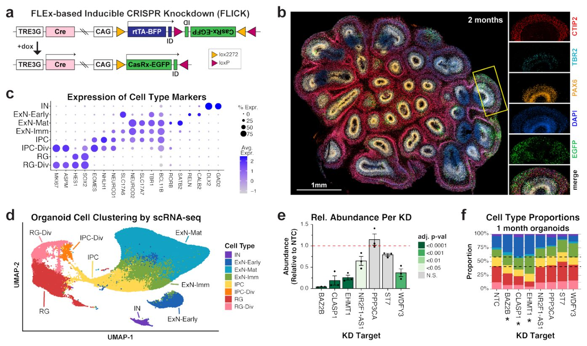
Суреттің толық сипаттамасы
2-сурет./ РАС гендерінің бұзылуы ми органоидтарының дамуын өзгертеді. a, Доксициклинмен индуцияланатын CasRx KD үшін FLICK құрылымдарының дизайны. FLICK құрылымдары сонымен қатар gRNA экспрессиялайды (көрсетілмеген). b, Үш тәуелсіз талдаудың ұқсас нәтижелерін көрсететін 2 айлық дамудан кейінгі FLICK органоиды. Келесі маркерлердің экспрессиясын визуализациялау үшін иммуногистохимия орындалды: EGFP = FLICK құрылымы; DAPI = ядролар, PAX6 = NPC; TBR2 = аралық прогениторлық жасушалар; CTIP2 = қоздырушы нейрондар. c, scRNA-seq арқылы жасуша түрлерін анықтау үшін қолданылатын канондық ми маркерлік гендерінің экспрессиясы. d, Бір және екі айда жиналған интеграцияланған ұзақ мерзімді органоидтық scRNA-seq деректерінің UMAP. e, Бір немесе екі айлық мозаикалық органоидтардан әрбір KD нысаны үшін жасушалардың салыстырмалы мөлшері. Нәтижелер 0-күні әрбір үлгі үшін бастапқы үлеске қатысты нормаланған және сол уақыт нүктесіндегі NTC-ге қатысты көрсетілген. График орташа +/- SEM көрсетеді. FLICK құрылымдары d14-d15 күндері доксициклинмен өңдеу арқылы индуцияланған болатын. Статистикалық маңыздылық Даннетттің көптік салыстыру тестімен қайталанатын өлшемдердің бір факторлы ANOVA көмегімен бағаланды. n = әр жағдай үшін үш биологиялық тәуелсіз үлгі. f, Бір айлық органоидтардағы әрбір KD нысаны бойынша жасуша түрінің құрамы. Нүктелі сызықтар негізгі жасуша түрлерінің (радиалды глия, аралық прогениторлар және нейрондар) NTC үлестерін көрсетеді. ExN/RG үлесі NTC-ден айтарлықтай ерекшеленетін үлгілер * белгісімен көрсетілген (adj. p < 0.05). Статистикалық талдау бір айлық барлық ұзақ мерзімді үлгілерді (мұнда көрсетілген) және екі айлық үлгілерді (Кеңейтілген деректердің 7f-суретін қараңыз) ескере отырып, Даннетттің көптік салыстыру тесті бар кәдімгі бір факторлы ANOVA көмегімен орындалды.

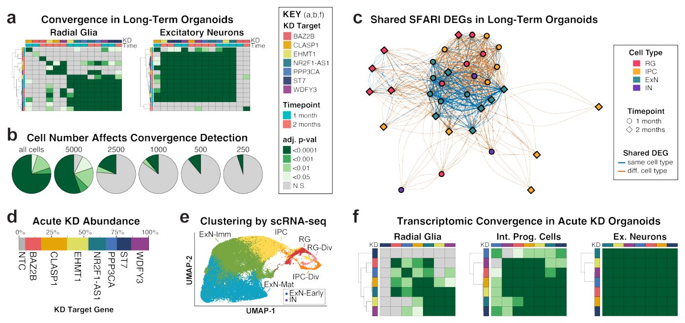
Суреттің толық сипаттамасы
3-сурет./ Ми органоидтарындағы РАС гендерінің бұзылуы кезіндегі транскриптомдық конвергенция. a, Ұзақ мерзімді органоидтардағы радиалды глия мен қоздырушы нейрондар үшін DEG кросс-байытылуының жылу картасы. b, Маңызды кросс-байытылуды (транскриптомдық конвергенцияны) көрсететін DEG жұптық жиынтықтарының үлестерін көрсететін дөңгелек диаграммалар. Әрбір дөңгелек диаграмманың үстінде көрсетілген санға дейін әр жағдай үшін жасушалар санын азайту байқалатын транскриптомдық конвергенцияны азайтады. c, Әртүрлі KD жағдайлары мен жасуша түрлері арасында ортақ DEG желілік визуализациясы. Жиектердің қалыңдығы ортақ DEG санын білдіреді. Түйіндер Фрухтерман-Рейнгольд алгоритмі (igraph) арқылы кластерлеу негізінде салынған. Бір-біріне жақынырақ орналасқан түйіндер орташа есеппен көбірек ортақ DEG ие. d, Жедел KD бар мозаикалық органоидтардың scRNA-seq деректерінен әрбір KD нысаны бар жасушалардың үлесі. e, scRNA-seq алынған жедел KD мозаикалық органоидтарының UMAP. f, Жедел KD органоидтарындағы әртүрлі KD үлгілері арасындағы кросс-байытылудың жылу картасы.

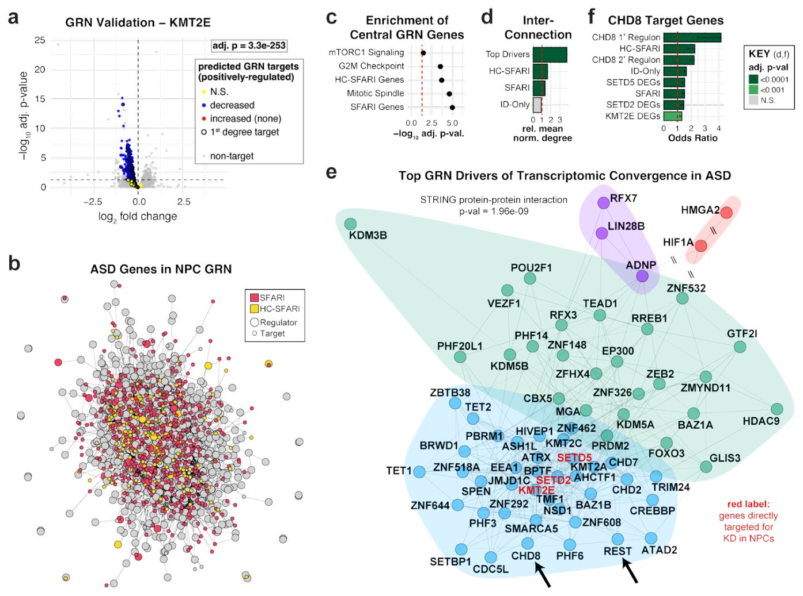
Суреттің толық сипаттамасы
4-сурет./ Гендік реттеуші желіні талдау CHD8 генін РАС-тағы конвергенцияның басты драйвері ретінде анықтайды. a, KMT2E KD кезіндегі дифференциалды экспрессияны көрсететін жанартау диаграммасы. GRN талдауы бойынша KMT2E оң реттейтіні болжанған гендер бөліп көрсетілген, мұнда статистикалық тұрғыдан айтарлықтай төмендеген DEG көк түспен, ұлғайтылған DEG қызыл түспен (жоқ), ал елеулі өзгерістері жоқ нысандар сары түспен көрсетілген. Статистикалық маңызды DEG көптік гипотезаны тексеру үшін Бенджамини-Хохберг түзеуі бар DESeq2 (Уольд тесті) көмегімен анықталды. Төмен реттелген DEG арасында 2-дәрежелі регулон гендерінің статистикалық маңызды байытылуы түзетілген p-мәнімен көрсетілген (көптік гипотезаны тексеру үшін Бенджамини-Хохберг түзеуі бар бір жақты Фишердің дәл тесттері). b, ARACNE көмегімен құрылған NPC GRN ішкі жиынтығының бейнесі. Барлық реттеушілер SFARI гендері болып табылатын бірінші дәрежелі нысана гендерімен бірге көрсетілген. c, Көрсетілген гендер жиынтығы ішінде жоғары PageRank ұпайлары бар гендердің байытылуын көрсететін гендер жиынтығын байыту талдауы (GSEA) (Салмақты Колмогоров-Смирнов жүгіруші сома статистикасы, ауыстырып қосу тесті, көптік гипотезаны тексеру үшін Бенджамини-Хохберг түзеуімен). d, Әртүрлі гендер жиынтығындағы реттеушілер арасындағы өзара байланыстылық өлшемі болып табылатын орташа нормаланған дәрежені көрсететін бағанды диаграмма. e, Итеративті walktrap кластерлеу арқылы анықталған ең жақсы реттеушілер модульдерінің бейнесі. Штрихталған сызықтар бұл сызықтардың масштабта емес екенін көрсетеді. Ерекше қызығушылық тудыратын гендер үлкен көрсеткілермен белгіленген. E панелінде кейінірек талданатын KD нысандары қызыл қаріппен ерекшеленген. f, Бірнеше гендер жиынтығында CHD8 нысандарының байытылуын көрсететін бағанды диаграмма. Sugathan et al. (2014)45 жұмысынан NPC-тегі CHD8 ChIP-seq деректері. Бағандар бір жақты Фишердің дәл тестінен алынған мүмкіндіктер қатынасын (OR) көрсетеді; қателік сызықтары OR үшін 95% сенім аралығының төменгі шекарасын көрсетеді (бір жақты тест үшін жоғарғы шекара анықталмаған). p-мәндері көптік гипотезаны тексеру үшін Бенджамини-Хохберг түзеуі арқылы түзетілді.

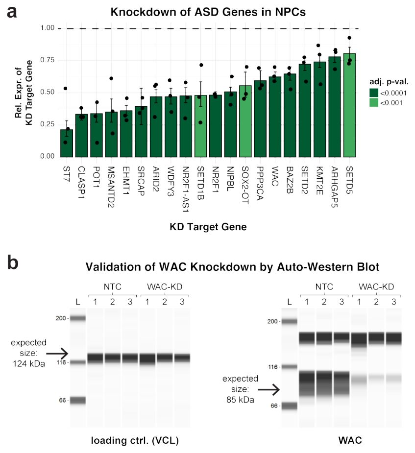
Суреттің толық сипаттамасы
Кеңейтілген деректер, 1-сурет./ NPC-тегі CasRx негізіндегі РАС гендерінің нокдауны. a, NTC үлгілерімен салыстырғанда әрбір KD үлгісіндегі нысана геннің салыстырмалы экспрессиясы. Қателік сызықтары: орташа мән +/- 95% сенім аралығы. n = әр жағдай үшін үш биологиялық тәуелсіз үлгі. Статистикалық маңызды DEG көптік гипотезаны тексеру үшін Бенджамини-Хохберг түзеуі бар DESeq2 (Уольд тесті) көмегімен анықталды. b, Әр жағдай үшін үш биологиялық тәуелсіз үлгіден алынған NTC және WAC-KD NPC авто-вестерн-блот арқылы ақуыз деңгейлерін талдау.

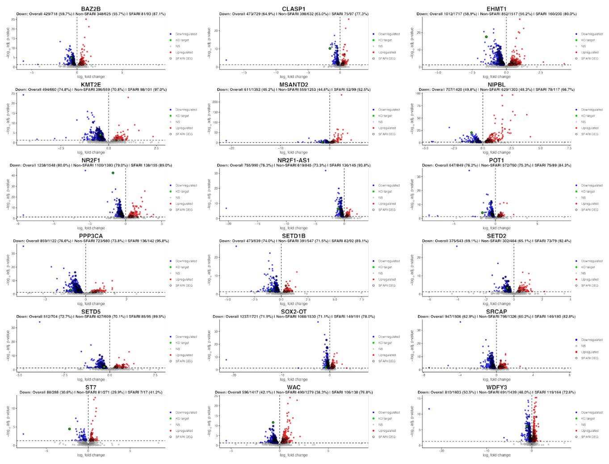
Суреттің толық сипаттамасы
Қосымша деректер, 2-сурет./ Нейральді діңгекті жасушалардағы (NPC) CasRx негізіндегі ASD гендерінің нокдаун кезіндегі дифференциалды гендер экспрессиясы. CasRx негізіндегі ASD гендерінің нокдаунынан кейінгі гендер экспрессиясына жалпы транскриптомдық әсерлерді көрсететін жанартаулық графиктер (volcano plots). Статистикалық тұрғыдан маңызды DEG'тер Бенджамини — Хохберг түзетуі бар DESeq2 (Уольд тесті) арқылы көптік гипотезаларды тексеру үшін анықталды. Статистикалық тұрғыдан айтарлықтай төмендеген (downregulated) DEG'тер көк түспен, ал статистикалық тұрғыдан айтарлықтай жоғарылаған (upregulated) DEG'тер қызыл түспен көрсетілген. Нокдаунға бағытталған ген (әр график үстінде көрсетілген) жасыл түспен ерекшеленген. SFARI DEG'тері қалың жақтаумен белгіленген.

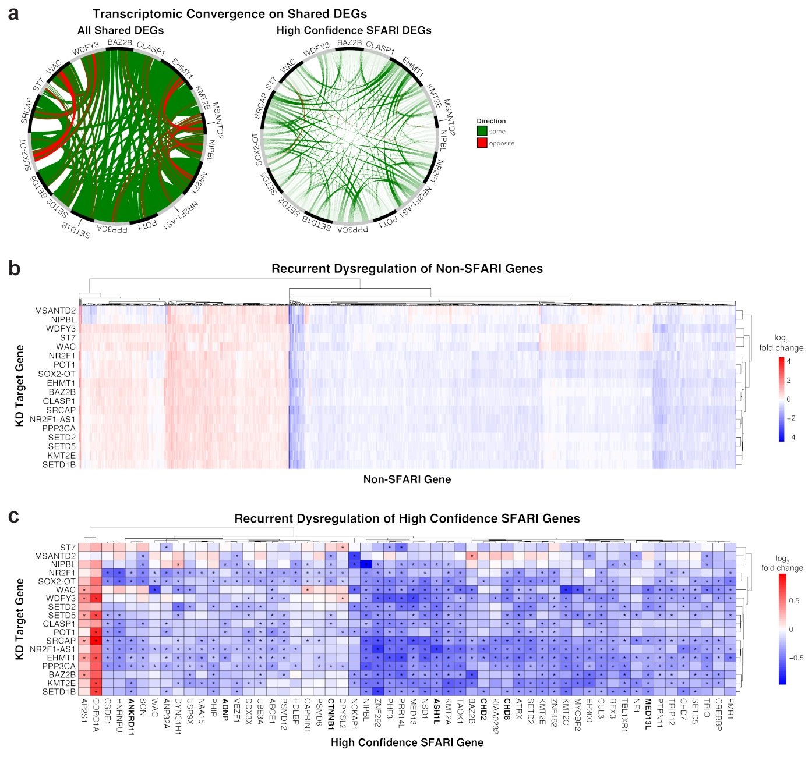
Суреттің толық сипаттамасы
Қосымша деректер, 3-сурет./ Ортақ дифференциалды экспрессияланған гендердің транскриптомдық конвергенциясы. a, Әр түрлі нокдаун жағдайлары арасында ортақ DEG'терді көрсететін Серкос диаграммалары (Circos plots). Тікелей салыстыру үшін жоғары сенімді SFARI гендеріне арналған Серкос диаграммасы (1d-суретте көрсетілген) мұнда да берілген. b, Кемінде 5 нокдаун жағдайында DEG болып табылатын SFARI емес гендердің салыстырмалы экспрессиясын көрсететін жылу картасы (heatmap). c, Кемінде 5 нокдаун жағдайында DEG болып табылатын жоғары сенімді SFARI гендерінің салыстырмалы экспрессиясын көрсететін жылу картасы. Статистикалық тұрғыдан маңызды DEG'тер Бенджамини — Хохберг түзетуі бар DESeq2 (Уольд тесті) көмегімен көптік гипотезаларды тексеру үшін анықталды және * белгісімен көрсетілген. Satterstrom et al. (2020)1 жұмысындағы ең күшті 26 ASD қауіп гендерінің арасынан анықталған гендер қалың қаріппен жазылған.

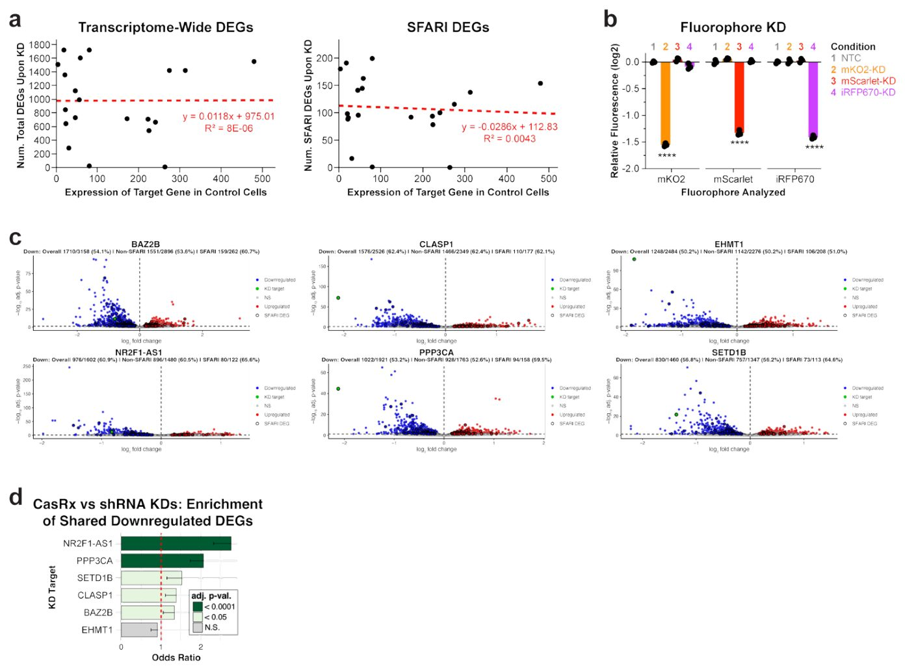
Суреттің толық сипаттамасы
Қосымша деректер, 4-сурет./ Ортақ DEG'тер CasRx негізіндегі нокдаунға тәуелді емес. a, y осінде жалпы DEG'тер саны (сол жақ график) немесе SFARI DEG'тері (оң жақ график) және x осінде нокдаун нысаналы генінің экспрессиясын көрсететін нүктелік диаграммалар (scatter plots). Сызықтық регрессия қызыл түспен көрсетілген. b, mKO2, mScarlet және iRFP670 флуорофорларын экспрессиялайтын NPC-тердегі флуоресценция қарқындылығына ағынды цитометриялық талдау. CasRx әрбір флуорофордың жеке нокдауны үшін қолданылды. Нәтижелер NTC бақылауының орташа мәніне қатысты көрсетілген. **** mKO2 үшін түзетілген p = 1.44e-25, mScarlet үшін 5.74e-24 және iRFP670 үшін 1.45e-24 (Бонферронидің көптік салыстыру тесті бар кәдімгі екі факторлы ANOVA). n = әр жағдай үшін үш биологиялық тәуелсіз үлгі. c, shRNA негізіндегі ASD гендерінің нокдаунынан кейінгі гендер экспрессиясына жалпы транскриптомдық әсерлерді көрсететін жанартаулық графиктер. Статистикалық тұрғыдан маңызды DEG'тер Бенджамини — Хохберг түзетуі бар DESeq2 (Уольд тесті) арқылы көптік гипотезаларды тексеру үшін анықталды. Статистикалық тұрғыдан айтарлықтай төмендеген DEG'тер көк түспен, ал статистикалық тұрғыдан айтарлықтай жоғарылаған DEG'тер қызыл түспен көрсетілген. Нокдаунға бағытталған ген (әр график үстінде көрсетілген) жасыл түспен ерекшеленген. SFARI DEG'тері қалың жақтаумен белгіленген. d, CasRx және shRNA арқылы бірдей нысаналы геннің нокдаунынан кейін сол төмендеген DEG'тердің байытылуын көрсететін бағанды диаграмма. Бағандар бір жақты Фишердің дәл тестінен алынған мүмкіндіктер қатынасын (OR) білдіреді; қателік сызықтары OR үшін 95% сенім интервалының төменгі шекарасын көрсетеді (бір жақты тест үшін жоғарғы шекара анықталмаған). p мәндері көптік гипотезаларды тексеру үшін Бенджамини — Хохберг түзетуін қолдану арқылы түзетілді.

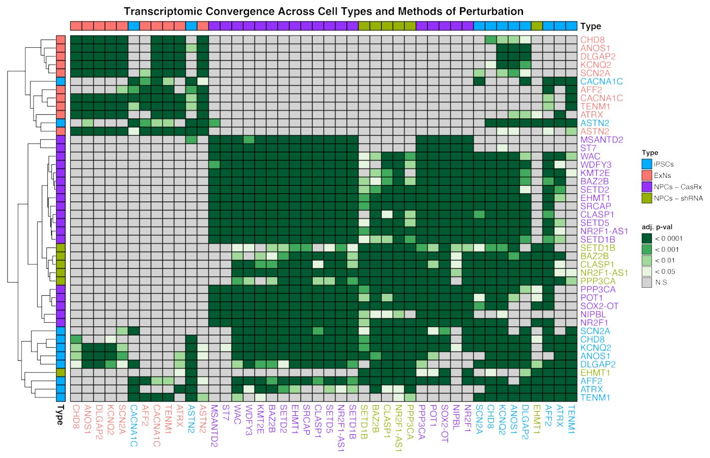
Суреттің толық сипаттамасы
Қосымша деректер, 5-сурет./ Транскриптомдық конвергенция жасуша түрлері мен эксперименталды контексттер бойынша орын алады. Бірнеше жасуша түрлері мен эксперименталды контексттер бойынша транскриптомдық конвергенцияны талдау. Төмендеген DEG'тердің статистикалық тұрғыдан маңызды кросс-байытылуы жасыл түспен көрсетілген (көптік гипотезаларды тексеру үшін Бенджамини — Хохберг түзетуі бар бір жақты Фишердің дәл тесттері). iPSC және ExN деректері Deneault et al. (2018)20 зерттеуінен қайта талданды.

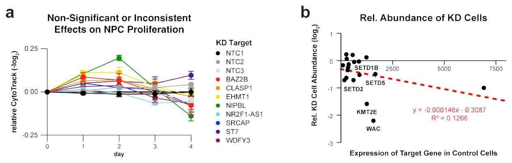
Суреттің толық сипаттамасы
Қосымша деректер, 6-сурет./ ASD генінің нокдаунынан кейінгі пролиферация мен жасуша санына әсерлері. a, Уақыт өте келе салыстырмалы CytoTrack бояуының қарқындылығы (-log2). Маңызды емес немесе қарама-қайшы әсерлерді көрсеткен нокдаун жағдайлары ғана көрсетілген. Графикте орташа мән +/- орташа мәннің стандартты қателігі (SEM) бейнеленген. Статистикалық маңыздылық Даннеттің көптік салыстыру тесті бар кәдімгі екі факторлы ANOVA көмегімен анықталды. Әр уақыт нүктесі үшін әр жағдай бойынша кемінде төрт биологиялық тәуелсіз үлгі талданды. Сондай-ақ 1f-суретін қараңыз және толық статистикалық нәтижелер үшін 10-қосымша кестені қараңыз. b, y осінде нокдаун жасушаларының салыстырмалы санын және x осінде нокдаун нысаналы генінің экспрессиясын көрсететін нүктелік диаграмма. Сызықтық регрессия қызыл түспен көрсетілген. Микроцефалияға қатысы бар және нокдауны пролиферацияның төмендеуіне әкеп соқтырған гендер (1f-суреті) ерекшеленген.

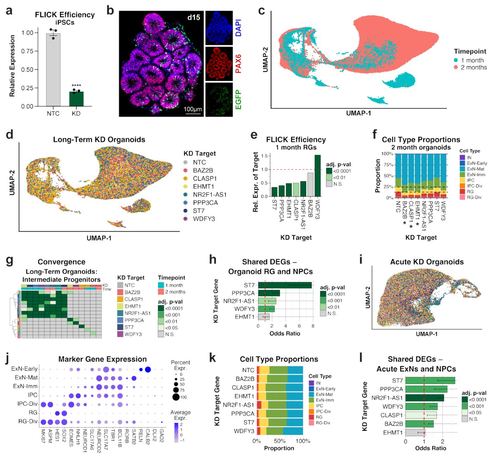
Суреттің толық сипаттамасы
Қосымша деректер, 7-сурет. Мозаикалық ми органоидтарындағы ASD гендерінің KD (нокдаун) жасалуы транскриптомдық конвергенцияны көрсетеді. a, iPSC-тердегі FLICK конструктінің KD тиімділігі. KD нысана гени ENSG00000261840 нормаланған экспрессиясы NTC үлгілеріне қатысты орташа +/- SEM ретінде көрсетілген. **** p = 3,87e-5, екі жақты t-критерийі. n = әр шарт үшін үш биологиялық тәуелсіз үлгі. b, Осыған ұқсас нәтижелері бар үш тәуелсіз талдаудың сипаттамасы болып табылатын 15-күнгі FLICK органоидының иммуногистохимиясы. c, Уақыт нүктелері бойынша боялған органоидтың scRNA-seq UMAP картасы. d, Нысана ген бойынша боялған органоид scRNA-seq деректерінің UMAP картасы. e, Бір айлық органоидтардың scRNA-seq көмегімен бағаланған радиальды глиядағы (RG) FLICK тиімділігі. Статистикалық маңызды DEG (дифференциалды экспрессияланатын гендер) бірнеше гипотезаны тексеру үшін Бонферрони түзетуі бар Seurat (параметрлік емес Уилкоксон рангтік критерийі) көмегімен анықталды. BAZ2B сандық бағалауына жасушалар санының аздығы әсер етуі мүмкін екенін және scRNA-seq-тегі WDFY3 қамтылуына транскрипттің ұзындығы (>14 кб) әсер етуі мүмкін екенін атап өтеміз. f, Екі айлық органоидтардағы әрбір KD нысанасы бойынша жасуша түрінің құрамы. Нүктелі сызықтар негізгі жасуша түрлерінің NTC пропорцияларын көрсетеді. ExN/RG пропорциясы NTC-ден айтарлықтай ерекшеленетін үлгілер * белгісімен көрсетілген (BAZ2B үшін adj. p = 0,021, CLASP1 үшін 0,018 және EHMT1 үшін 0,012), бір айлық (2f-суретті қараңыз) және екі айлық (мұнда көрсетілген) барлық ұзақ мерзімді үлгілерді ескере отырып, Даннеттің бірнеше салыстыру тесті бар кәдімгі бір бағытты ANOVA. g, IPC-терден шыққан DEG-тердің өзара байытылуы (бірнеше гипотезаны тексеру үшін Бенджамини — Хохберг түзетуі бар бір жақты Фишердің дәл тесттері). h, Бірдей нысана геннің KD жасалуы кезіндегі алдыңғы NPC культураларының DEG-терімен салыстырғанда, бір айлық органоидтардың RG-терінен шыққан DEG-тердің өзара байытылуын көрсететін бағанды диаграмма. Өзара байытылуға кемінде 20 DEG бар кернеулер ғана тексерілді. Бағандар бір жақты Фишердің дәл тестінен алынған мүмкіндіктер қатынасын (OR) көрсетеді; қателік сызықтары OR үшін 95% сенім аралығының төменгі шегін білдіреді (бір жақты тест үшін жоғарғы шек анықталмаған). p мәндері бірнеше гипотезаны тексеру үшін Бенджамини — Хохберг түзетуі көмегімен түзетілді. i, d панеліндегідей KD нысана гени бойынша боялған жедел KD органоидтарынан алынған scRNA-seq деректерінің UMAP картасы. j, Жасуша түрлерін анықтау үшін қолданылатын маркерлік гендердің экспрессиясы. k, Жедел KD органоидтарындағы әртүрлі кернеулер бойынша жасуша түрінің құрамы. l, Жедел KD мозаикалық органоидтарынан шыққан қоздырушы нейрондардың (ExN) DEG-терімен салыстырғанда, бірдей нысана геннің KD жасалуы кезіндегі алдыңғы NPC культураларының DEG-терінен шыққан өзара байытылуын көрсететін бағанды диаграмма. Бағандар бір жақты Фишердің дәл тестінен алынған мүмкіндіктер қатынасын (OR) көрсетеді; қателік сызықтары OR үшін 95% сенім аралығының төменгі шегін білдіреді (бір жақты тест үшін жоғарғы шек анықталмаған). p мәндері бірнеше гипотезаны тексеру үшін Бенджамини — Хохберг түзетуі көмегімен түзетілді.

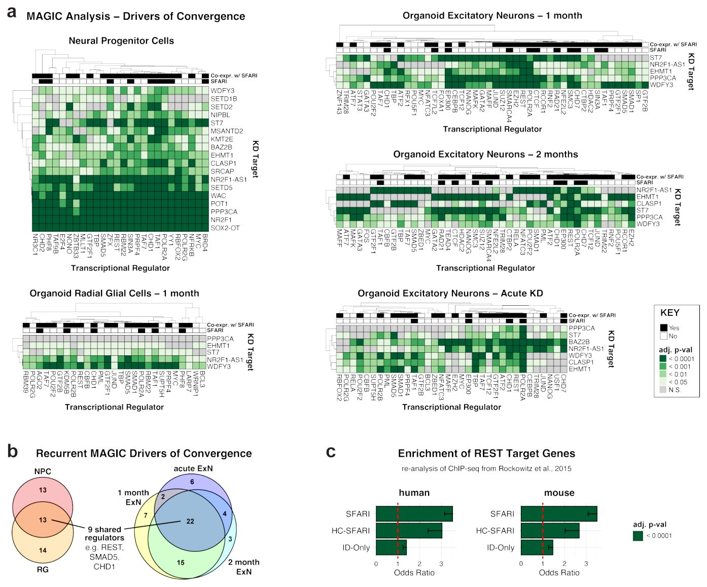
Суреттің толық сипаттамасы
Қосымша деректер, 8-сурет. REST қоса алғанда, негізгі транскрипция факторлары қайталанатын дисреттелген гендерді нысанаға алады. a, ASD гендерінің KD жасалуынан кейін әртүрлі жасуша түрлерінің DEG-тері арасында нысандары байытылған транскрипциялық реттеушілерді анықтайтын MAGIC талдауы (бірнеше гипотезаны тексеру үшін Бенджамини — Хохберг түзетуі бар Колмогоров — Смирнов тесті). Әрбір популяция үшін MAGIC реттеушілері осы реттеушіні қамтитын ASD генінің KD саны бойынша бағаланды. Мұнда ең жоғары ұпай жинаған реттеушілер, сондай-ақ ұпайлары тең кез келген қосымша реттеушілер кіреді. b, Әртүрлі жағдайларда анықталған қиылысатын MAGIC транскрипциялық реттеушілерін көрсететін сандық Эйлер диаграммалары. c, Адам мен тышқанның эмбриональды дің жасушаларынан алынған REST нысандары арасындағы SFARI, HC-SFARI немесе тек ID гендерінің байытылуын көрсететін бағанды диаграмма. Rockowitz & Zheng (2015)66 жұмысынан алынған REST нысана деректері. Бағандар бір жақты Фишердің дәл тестінен алынған мүмкіндіктер қатынасын (OR) көрсетеді; қателік сызықтары OR үшін 95% сенім аралығының төменгі шегін білдіреді (бір жақты тест үшін жоғарғы шек анықталмаған). p мәндері бірнеше гипотезаны тексеру үшін Бенджамини — Хохберг түзетуі көмегімен түзетілді.

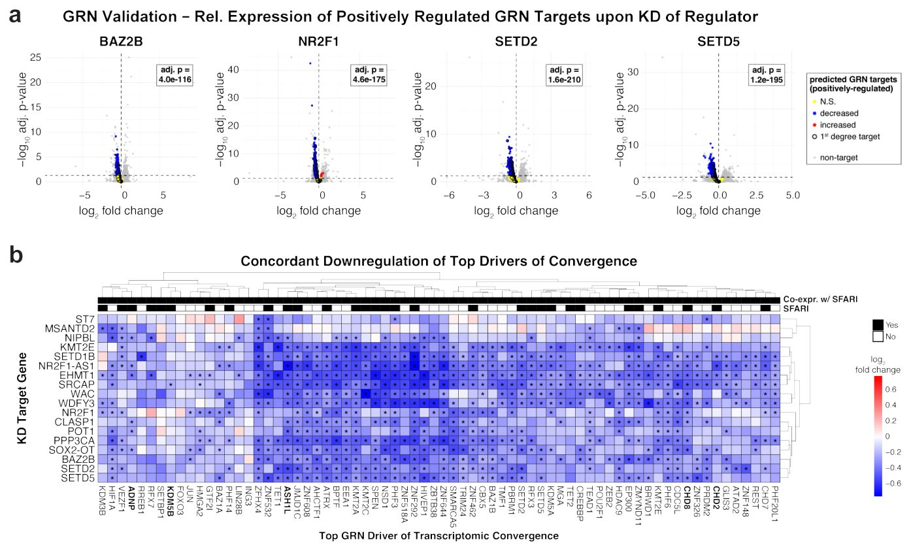
Суреттің толық сипаттамасы
Қосымша деректер, 9-сурет. NPC гендік реттеуші желісін қайта құру арқылы анықталған конвергенцияның негізгі драйверлері. a, Графиктің үстінде көрсетілген реттеушінің KD жасалуы кезіндегі дифференциалды экспрессияны көрсететін жанартау диаграммалары. GRN талдауы бойынша көрсетілген реттеуші оң реттейді деп болжанған гендер бөліп көрсетілген: статистикалық маңызды түрде төмендеген DEG көк түспен, көтерілген DEG қызыл түспен, ал елеулі өзгерісі жоқ нысандар сары түспен көрсетілген. Статистикалық маңызды DEG бірнеше гипотезаны тексеру үшін Бенджамини — Хохберг түзетуі бар DESeq2 (Вальд тесті) көмегімен анықталды. Төмен реттелген DEG арасындағы 2-ші дәрежелі регулон гендерінің статистикалық маңызды байытылуы түзетілген p мәнімен көрсетілген (бірнеше гипотезаны тексеру үшін Бенджамини — Хохберг түзетуі бар бір жақты Фишердің дәл тесттері). b, Әртүрлі ASD генінің KD үлгілеріндегі конвергенцияның негізгі GRN драйверлерінің салыстырмалы экспрессиясын көрсететін жылу картасы. Статистикалық маңызды DEG бірнеше гипотезаны тексеру үшін Бенджамини — Хохберг түзетуі бар DESeq2 (Вальд тесті) көмегімен анықталды және * белгісімен көрсетілген. Satterstrom және т.б. (2020)1 еңбегіндегі ең күшті 26 ASD қауіп генінің қатарына кіретін гендер қою қаріппен жазылған.

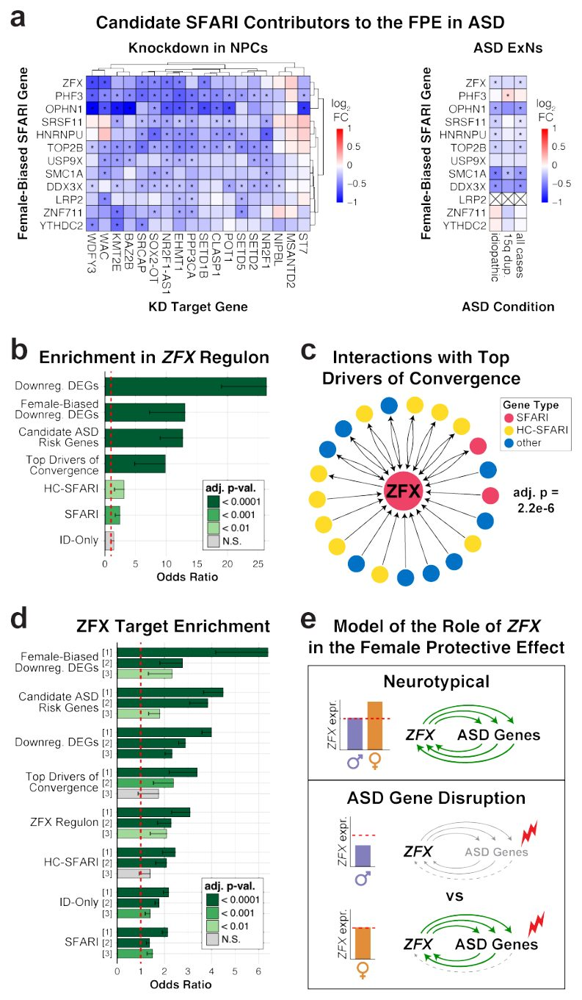
Суреттің толық сипаттамасы
Қосымша деректер, 10-сурет. ZFX мида әйелдерге қатысты артық экспрессияны көрсетеді және ASD генінің KD жасалуы кезінде қайталанатын түрде төмендейді. a, ASD-дегі FPE-ге үлес қосушы кандидаттардың салыстырмалы экспрессиясын көрсететін жылу карталары. Сол жақта: бірнеше гипотезаны тексеру үшін Бенджамини — Хохберг түзетуі бар DESeq2 (Вальд тесті) көмегімен анықталған статистикалық маңызды DEG (* белгісімен көрсетілген) бар NTC-ге қатысты KD шарттары бойынша NPC-тегі экспрессия. Оң жақта: Dias және т.б. (2024)47 жұмысынан қайта талданған, бірнеше гипотезаны тексеру үшін Бонферрони түзетуі бар MAST (шындық қатынасы тесті) көмегімен анықталған статистикалық маңызды DEG (* белгісімен көрсетілген) бар идиопатиялық ер адам бақылау үлгілеріне қатысты ASD бар ер адамдардың ExN-індегі экспрессия. Анықталмағаны X әрпімен көрсетілген. b, Пренатальды және ересек қыртысты қоса алғанда, адамның орталық жүйке жүйесінің (ОЖЖ) бірнеше тіндеріндегі ZFX экспрессиясының әйел жынысына қарай айтарлықтай ығысуын көрсететін бағанды диаграмма. Әртүрлі аймақтар түрлі түстермен көрсетілген. Көрсетілген экспрессия деңгейлері мен статистикалық нәтижелер тікелей келесі дереккөздерден алынды: (1) Benoit-Pilven және т.б. (2025)67, (2) Kissel және т.б. (2024)68 және (3) Fass және т.б. (2024)69. Статистикалық талдауларға қатысты мәліметтерді тиісті дереккөзден қараңыз. c, Ер адамдардағы экспрессияға қатысты қыртыстық аймақтар мен жасуша түрлері бойынша ZFX экспрессиясын көрсететін жылу картасы. Жасуша түрлері мен аймақтар бастапқы дереккөздегідей қысқартылған: DeCasien және т.б. (2026)62.

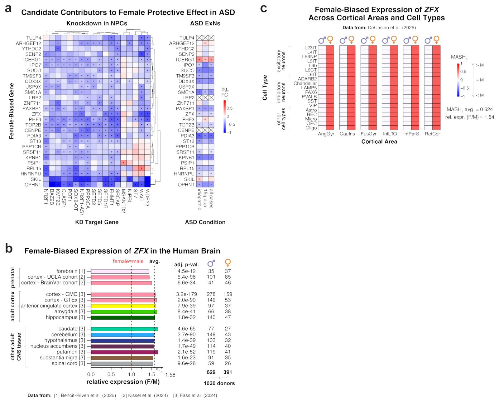
Зерттеу сызбасы
Препринт әлі рецензиядан өтпеген. Қорытындылар алдын ала.
Дереккөз
| Дереккөз | Санат | Препринт лицензиясы |
|---|---|---|
| bioRxiv | genetics | CC BY 4.0 |
Дереккөздер
| Дереккөз | Сілтеме |
|---|---|
| Страница препринта | biorxiv.org |
| Полный текст (PDF) | biorxiv.org |
| Копия PDF | github.com |
| DOI | doi.org |
| Метаданные Crossref | api.crossref.org |
| Europe PMC | europepmc.org |